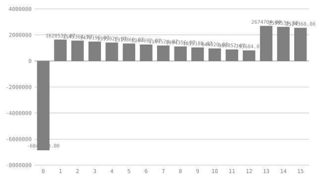

# Battery storage: a project a lender can sweep
Battery storage: a project a lender can sweep
Halden Flats is a planned grid-scale battery on the site of a retired substation. It charges when power is cheap, discharges when it is dear, and is paid for standing ready under the capacity market. Before a bank lends against it, the credit committee wants answers to more than one question. How big should the battery be? How many hours of storage? How bad can the trading spread get? How fast can the cells fade? How much debt can it carry?
Halden Flats is a planned grid-scale battery on the site of a retired substation. It charges when power is cheap, discharges when it is dear, and is paid for standing ready under the capacity market. Before a bank lends against it, the credit committee wants answers to more than one question. How big should the battery be? How many hours of storage? How bad can the trading spread get? How fast can the cells fade? How much debt can it carry?
A spreadsheet answers one of those at a time, and the sensitivity tab that answers the rest is usually a macro nobody reviews. This document holds the model and the sweep in the same file. Its covenants are assertions, so `check` proves the base case holds them. Its levers declare the grid a lender wants swept, and `visimark simulate` asks every question on that grid and prints the readings the document asks for. Every number below is derived. Change one assumption and the next `check` says exactly what moved.
A spreadsheet answers one of those at a time, and the sensitivity tab that
answers the rest is usually a macro nobody reviews. This document holds the
model and the sweep in the same file. Its covenants are assertions, so check
proves the base case holds them. Its levers declare the grid a lender wants
swept, and visimark simulate asks every question on that grid and prints the
readings the document asks for. Every number below is derived. Change one
assumption and the next check says exactly what moved.
## What is invented
What is invented
The site, the prices and the counterparties are made up. The orders of magnitude are not: the capex split between power and energy, the capacity derating for short-duration storage, the linear fade of lithium-ion capacity, the debt terms and the covenant floors are all in the range a European battery financing would show in 2026. The model leaves out tax, augmentation, the construction period and reserve accounts. Each of those changes the answer, and none of them changes how the document is put together.
The site, the prices and the counterparties are made up. The orders of magnitude are not: the capex split between power and energy, the capacity derating for short-duration storage, the linear fade of lithium-ion capacity, the debt terms and the covenant floors are all in the range a European battery financing would show in 2026. The model leaves out tax, augmentation, the construction period and reserve accounts. Each of those changes the answer, and none of them changes how the document is put together.
## Units
Units
Energy is power held for a time. One definition says so, and every product of megawatts and hours in the model is then checked as megawatt-hours.
Energy is power held for a time. One definition says so, and every product of megawatts and hours in the model is then checked as megawatt-hours.
```vmark [MWh] = [MW⋅h] ```
[MWh] = [MW⋅h]
## The levers
The levers
Five decisions are open, and each is declared a `param`. The domain is the range the sponsor is willing to consider. The `lattice` is the spacing at which the lender wants that range swept. `check`, `fmt` and `eval` see only the defaults. `simulate` sees the whole grid: 4 × 4 × 4 × 3 × 3 = 576 questions.
Five decisions are open, and each is declared a param. The domain is the
range the sponsor is willing to consider. The lattice is the spacing at which
the lender wants that range swept. check, fmt and eval see only the
defaults. simulate sees the whole grid: 4 × 4 × 4 × 3 × 3 = 576 questions.
```vmark #levers param power [MW] integer in [40, 100] lattice 20 = default 60 param duration [h] integer in [1, 4] lattice 1 = default 2 param spread [EUR/MWh] precision 0 in [60, 120] lattice 20 = default 80 param fade precision 3 in [1.5%, 3.5%] lattice 1% = default 2.5% param gearing precision 2 in [60%, 80%] lattice 10% = default 70% ```
param power [MW] integer in [40, 100] lattice 20 = default 60
param duration [h] integer in [1, 4] lattice 1 = default 2
param spread [EUR/MWh] precision 0 in [60, 120] lattice 20 = default 80
param fade precision 3 in [1.5%, 3.5%] lattice 1% = default 2.5%
param gearing precision 2 in [60%, 80%] lattice 10% = default 70%
| Lever | Meaning | Swept at | |------------|----------------------------------------------------------------------|-----------------| | `power` | Inverter rating: how fast the battery can charge or discharge | 40, 60, 80, 100 MW | | `duration` | Hours of storage at full power; energy capacity is power × duration | 1, 2, 3, 4 h | | `spread` | Average captured price difference between charging and discharging | 60, 80, 100, 120 EUR/MWh | | `fade` | Share of the original capacity lost each year | 1.5%, 2.5%, 3.5% | | `gearing` | Debt as a share of capex | 60%, 70%, 80% |
| Lever | Meaning | Swept at |
|---|---|---|
power |
Inverter rating: how fast the battery can charge or discharge | 40, 60, 80, 100 MW |
duration |
Hours of storage at full power; energy capacity is power × duration | 1, 2, 3, 4 h |
spread |
Average captured price difference between charging and discharging | 60, 80, 100, 120 EUR/MWh |
fade |
Share of the original capacity lost each year | 1.5%, 2.5%, 3.5% |
gearing |
Debt as a share of capex | 60%, 70%, 80% |
## The fixed assumptions
The fixed assumptions
These are not swept. Each is a claim the sponsor signs, and the lender reads it once.
These are not swept. Each is a claim the sponsor signs, and the lender reads it once.
```vmark #market cycles = 400 depth = 90% efficiency = 87% capacity_price [EUR/MW] = 45000.00 full_derating [h] = 4 capex_power [EUR/MW] = 80000.00 capex_energy [EUR/MWh] = 150000.00 opex_power [EUR/MW] = 9000.00 opex_energy [EUR/MWh] = 2000.00 grid_limit [MW] = 90 life = 15 wacc = 8% ```
cycles = 400
depth = 90%
efficiency = 87%
capacity_price [EUR/MW] = 45000.00
full_derating [h] = 4
capex_power [EUR/MW] = 80000.00
capex_energy [EUR/MWh] = 150000.00
opex_power [EUR/MW] = 9000.00
opex_energy [EUR/MWh] = 2000.00
grid_limit [MW] = 90
life = 15
wacc = 8%
`cycles` is full equivalent cycles a year, roughly one a day outside maintenance. `depth` is the usable share of nameplate energy, and `efficiency` is round-trip. `wacc` is the project's cost of capital. The capacity market pays a battery in proportion to how long it can sustain its rating: a four-hour battery earns the full `capacity_price` per MW, and a one-hour battery earns a quarter of it. The grid connection offer is `grid_limit`. The cells are warranted for `life` years.
cycles is full equivalent cycles a year, roughly one a day outside
maintenance. depth is the usable share of nameplate energy, and
efficiency is round-trip. wacc is the project's cost of capital. The capacity market pays a battery in proportion to
how long it can sustain its rating: a four-hour battery earns the full
capacity_price per MW, and a one-hour battery earns a quarter of it. The grid
connection offer is grid_limit. The cells are warranted for life years.
## The asset
The asset
```vmark #asset energy [MWh] = levers.power * levers.duration throughput [MWh] = energy * market.depth * market.cycles derating = IF(levers.duration >= market.full_derating, 1, levers.duration / market.full_derating) arbitrage_y1 [EUR] precision 2 = throughput * market.efficiency * levers.spread capacity_y [EUR] precision 2 = levers.power * market.capacity_price * derating opex_y [EUR] = levers.power * market.opex_power + energy * market.opex_energy capex [EUR] = levers.power * market.capex_power + energy * market.capex_energy soh_eol precision 4 = 1 - levers.fade * market.life ```
energy [MWh] = levers.power * levers.duration
throughput [MWh] = energy * market.depth * market.cycles
derating = IF(levers.duration >= market.full_derating, 1, levers.duration / market.full_derating)
arbitrage_y1 [EUR] precision 2 = throughput * market.efficiency * levers.spread
capacity_y [EUR] precision 2 = levers.power * market.capacity_price * derating
opex_y [EUR] = levers.power * market.opex_power + energy * market.opex_energy
capex [EUR] = levers.power * market.capex_power + energy * market.capex_energy
soh_eol precision 4 = 1 - levers.fade * market.life
At the defaults the battery stores **120 MWh**<!--vmark=asset.energy|unit--> and costs **22800000.00 EUR**<!--vmark=asset.capex|unit--> to build. In its first year it trades **3006720.00 EUR**<!--vmark=asset.arbitrage_y1|unit--> of spread and earns **1350000.00 EUR**<!--vmark=asset.capacity_y|unit--> from the capacity market. After fifteen years of fade it holds **0.6250**<!--vmark=asset.soh_eol--> of its original capacity.
At the defaults the battery stores 120 MWh and costs 22800000.00 EUR to build. In its first year it trades 3006720.00 EUR of spread and earns 1350000.00 EUR from the capacity market. After fifteen years of fade it holds 0.6250 of its original capacity.
## The debt
The debt
The loan is gearing × capex, repaid in equal annual instalments over the tenor. Cash flow available for debt service (CFADS) falls every year as the cells fade, so the tightest cover is in the last year of the loan. That is the year the covenant is tested in.
The loan is gearing × capex, repaid in equal annual instalments over the tenor. Cash flow available for debt service (CFADS) falls every year as the cells fade, so the tightest cover is in the last year of the loan. That is the year the covenant is tested in.
```vmark #debt rate = 6.5% tenor = 12 dscr_floor = 1.30 amount [EUR] precision 2 = asset.capex * levers.gearing service [EUR] precision 2 = PMT(rate, tenor, amount) cfads_tenor [EUR] = asset.arbitrage_y1 * (1 - levers.fade * (tenor - 1)) + asset.capacity_y - asset.opex_y dscr_min precision 2 = cfads_tenor / service ```
rate = 6.5%
tenor = 12
dscr_floor = 1.30
amount [EUR] precision 2 = asset.capex * levers.gearing
service [EUR] precision 2 = PMT(rate, tenor, amount)
cfads_tenor [EUR] = asset.arbitrage_y1 * (1 - levers.fade * (tenor - 1)) + asset.capacity_y - asset.opex_y
dscr_min precision 2 = cfads_tenor / service
The loan is **15960000.00 EUR**<!--vmark=debt.amount|unit-->, serviced at **1956187.93 EUR**<!--vmark=debt.service|unit--> a year. In year twelve, CFADS covers that **1.41**<!--vmark=debt.dscr_min-->×.
The loan is 15960000.00 EUR, serviced at 1956187.93 EUR a year. In year twelve, CFADS covers that 1.41×.
## Year by year
Year by year
`Live` is 1 in an operating year and 0 in the construction year. Arbitrage fades with the cells; the capacity payment is on the inverter rating and does not. `Equity` is what reaches the sponsor: CFADS less debt service, with the equity share of capex in year 0.
Live is 1 in an operating year and 0 in the construction year. Arbitrage
fades with the cells; the capacity payment is on the inverter rating and does
not. Equity is what reaches the sponsor: CFADS less debt service, with the
equity share of capex in year 0.
| Year | Live | Arbitrage [EUR] | Capacity [EUR] | Opex [EUR] | CFADS [EUR] | Service [EUR] | Flow [EUR] | Equity [EUR] | |-----:|-----:|----------------:|---------------:|-----------:|------------:|--------------:|-----------:|-------------:| | 0 | 0 | 0.00 | 0.00 | 0.00 | 0.00 | 0.00 | -22800000.00 | -6840000.00 | | 1 | 1 | 3006720.00 | 1350000.00 | 780000.00 | 3576720.00 | 1956187.93 | 3576720.00 | 1620532.07 | | 2 | 1 | 2931552.00 | 1350000.00 | 780000.00 | 3501552.00 | 1956187.93 | 3501552.00 | 1545364.07 | | 3 | 1 | 2856384.00 | 1350000.00 | 780000.00 | 3426384.00 | 1956187.93 | 3426384.00 | 1470196.07 | | 4 | 1 | 2781216.00 | 1350000.00 | 780000.00 | 3351216.00 | 1956187.93 | 3351216.00 | 1395028.07 | | 5 | 1 | 2706048.00 | 1350000.00 | 780000.00 | 3276048.00 | 1956187.93 | 3276048.00 | 1319860.07 | | 6 | 1 | 2630880.00 | 1350000.00 | 780000.00 | 3200880.00 | 1956187.93 | 3200880.00 | 1244692.07 | | 7 | 1 | 2555712.00 | 1350000.00 | 780000.00 | 3125712.00 | 1956187.93 | 3125712.00 | 1169524.07 | | 8 | 1 | 2480544.00 | 1350000.00 | 780000.00 | 3050544.00 | 1956187.93 | 3050544.00 | 1094356.07 | | 9 | 1 | 2405376.00 | 1350000.00 | 780000.00 | 2975376.00 | 1956187.93 | 2975376.00 | 1019188.07 | | 10 | 1 | 2330208.00 | 1350000.00 | 780000.00 | 2900208.00 | 1956187.93 | 2900208.00 | 944020.07 | | 11 | 1 | 2255040.00 | 1350000.00 | 780000.00 | 2825040.00 | 1956187.93 | 2825040.00 | 868852.07 | | 12 | 1 | 2179872.00 | 1350000.00 | 780000.00 | 2749872.00 | 1956187.93 | 2749872.00 | 793684.07 | | 13 | 1 | 2104704.00 | 1350000.00 | 780000.00 | 2674704.00 | 0.00 | 2674704.00 | 2674704.00 | | 14 | 1 | 2029536.00 | 1350000.00 | 780000.00 | 2599536.00 | 0.00 | 2599536.00 | 2599536.00 | | 15 | 1 | 1954368.00 | 1350000.00 | 780000.00 | 2524368.00 | 0.00 | 2524368.00 | 2524368.00 |
| Year | Live | Arbitrage [EUR] | Capacity [EUR] | Opex [EUR] | CFADS [EUR] | Service [EUR] | Flow [EUR] | Equity [EUR] |
|---|---|---|---|---|---|---|---|---|
| 0 | 0 | 0.00 | 0.00 | 0.00 | 0.00 | 0.00 | -22800000.00 | -6840000.00 |
| 1 | 1 | 3006720.00 | 1350000.00 | 780000.00 | 3576720.00 | 1956187.93 | 3576720.00 | 1620532.07 |
| 2 | 1 | 2931552.00 | 1350000.00 | 780000.00 | 3501552.00 | 1956187.93 | 3501552.00 | 1545364.07 |
| 3 | 1 | 2856384.00 | 1350000.00 | 780000.00 | 3426384.00 | 1956187.93 | 3426384.00 | 1470196.07 |
| 4 | 1 | 2781216.00 | 1350000.00 | 780000.00 | 3351216.00 | 1956187.93 | 3351216.00 | 1395028.07 |
| 5 | 1 | 2706048.00 | 1350000.00 | 780000.00 | 3276048.00 | 1956187.93 | 3276048.00 | 1319860.07 |
| 6 | 1 | 2630880.00 | 1350000.00 | 780000.00 | 3200880.00 | 1956187.93 | 3200880.00 | 1244692.07 |
| 7 | 1 | 2555712.00 | 1350000.00 | 780000.00 | 3125712.00 | 1956187.93 | 3125712.00 | 1169524.07 |
| 8 | 1 | 2480544.00 | 1350000.00 | 780000.00 | 3050544.00 | 1956187.93 | 3050544.00 | 1094356.07 |
| 9 | 1 | 2405376.00 | 1350000.00 | 780000.00 | 2975376.00 | 1956187.93 | 2975376.00 | 1019188.07 |
| 10 | 1 | 2330208.00 | 1350000.00 | 780000.00 | 2900208.00 | 1956187.93 | 2900208.00 | 944020.07 |
| 11 | 1 | 2255040.00 | 1350000.00 | 780000.00 | 2825040.00 | 1956187.93 | 2825040.00 | 868852.07 |
| 12 | 1 | 2179872.00 | 1350000.00 | 780000.00 | 2749872.00 | 1956187.93 | 2749872.00 | 793684.07 |
| 13 | 1 | 2104704.00 | 1350000.00 | 780000.00 | 2674704.00 | 0.00 | 2674704.00 | 2674704.00 |
| 14 | 1 | 2029536.00 | 1350000.00 | 780000.00 | 2599536.00 | 0.00 | 2599536.00 | 2599536.00 |
| 15 | 1 | 1954368.00 | 1350000.00 | 780000.00 | 2524368.00 | 0.00 | 2524368.00 | 2524368.00 |
```vmark #years Arbitrage = asset.arbitrage_y1 * Live * (1 - levers.fade * (Year - 1)) Capacity = asset.capacity_y * Live Opex = asset.opex_y * Live CFADS = Arbitrage + Capacity - Opex Service = IF(Live == 1, IF(Year <= debt.tenor, debt.service, 0), 0) Flow = CFADS - IF(Live == 1, 0, asset.capex) Equity precision 2 = Flow + IF(Live == 1, 0, debt.amount) - Service chart equity as bar of Equity labelled Year aspect 16:9 ```
Arbitrage = asset.arbitrage_y1 * Live * (1 - levers.fade * (Year - 1))
Capacity = asset.capacity_y * Live
Opex = asset.opex_y * Live
CFADS = Arbitrage + Capacity - Opex
Service = IF(Live == 1, IF(Year <= debt.tenor, debt.service, 0), 0)
Flow = CFADS - IF(Live == 1, 0, asset.capex)
Equity precision 2 = Flow + IF(Live == 1, 0, debt.amount) - Service
chart equity as bar of Equity labelled Year aspect 16:9
<!--vmark=years.equity-->

## Returns
Returns
```vmark #returns npv [EUR] precision 2 = NPV(market.wacc, years.Flow) equity_irr precision 4 = IRR(years.Equity) report best scalar returns.equity_irr direction max among feasible report best scalar returns.npv direction max among feasible report deltas among all ```
npv [EUR] precision 2 = NPV(market.wacc, years.Flow)
equity_irr precision 4 = IRR(years.Equity)
report best scalar returns.equity_irr direction max among feasible
report best scalar returns.npv direction max among feasible
report deltas among all
At the defaults the project is worth **4215389.03 EUR**<!--vmark=returns.npv|unit--> at an 8% cost of capital. The sponsor's equity returns **0.1931**<!--vmark=returns.equity_irr--> a year.
At the defaults the project is worth 4215389.03 EUR at an 8% cost of capital. The sponsor's equity returns 0.1931 a year.
## The covenants
The covenants
```vmark #credit assert debt.dscr_min >= debt.dscr_floor assert asset.soh_eol >= 60% assert levers.power <= market.grid_limit assert levers.gearing <= 75% report gates report forbidden report deltas on debt.dscr_min, asset.soh_eol among all ```
assert debt.dscr_min >= debt.dscr_floor
assert asset.soh_eol >= 60%
assert levers.power <= market.grid_limit
assert levers.gearing <= 75%
report gates
report forbidden
report deltas on debt.dscr_min, asset.soh_eol among all
1. **Debt service cover.** CFADS in the last debt year must cover the instalment at least 1.30 times. 2. **End-of-life health.** The cells must hold at least 60% of their capacity after fifteen years. That is the warranty the lender's technical adviser accepted. 3. **Grid connection.** The inverter cannot exceed the connection offer. 4. **Gearing.** The bank lends at most 75% of capex.
- Debt service cover. CFADS in the last debt year must cover the instalment at least 1.30 times.
- End-of-life health. The cells must hold at least 60% of their capacity after fifteen years. That is the warranty the lender's technical adviser accepted.
- Grid connection. The inverter cannot exceed the connection offer.
- Gearing. The bank lends at most 75% of capex.
## Sweeping it
Sweeping it
`check` proves that the base case is sound. The committee also wants to know how far the levers can move before it stops being sound, and which covenant gives way first. Three sheets ask for those readings: `#returns` above, `#credit` above, and `#ledger` below. One command asks all 576 questions on the grid, plus the base, and prints them:
check proves that the base case is sound. The committee also wants to
know how far the levers can move before it stops being sound, and which
covenant gives way first. Three sheets ask for those readings: #returns
above, #credit above, and #ledger below. One command asks all 576
questions on the grid, plus the base, and prints them:
```console
$ visimark simulate example-battery-storage.md
simulate: example-battery-storage.md: 577 questions (5 lattice params)
==> example-battery-storage.md <==
#returns
report best scalar returns.equity_irr direction max among feasible
power=40 duration=4 spread=120 fade=1.5% gearing=70%
returns.equity_irr 0.5693 (+0.3762 against base)
chosen from 159 feasible of 576 questions
3 questions tie; the first in grid order is shown
report best scalar returns.npv direction max among feasible
power=80 duration=4 spread=120 fade=1.5% gearing=60%
returns.npv [EUR] 59078328.30 (+54862939.27 against base)
chosen from 159 feasible of 576 questions
2 questions tie; the first in grid order is shown
report deltas among all
returns.npv [EUR] base 4215389.03
low -9850576.57 (-14065965.60) power=100 duration=1 spread=60 fade=3.5% gearing=70%
high 73847910.37 (+69632521.34) power=100 duration=4 spread=120 fade=1.5% gearing=60%
returns.equity_irr base 0.1931
low -0.1811 (-0.3742) power=40 duration=1 spread=60 fade=3.5% gearing=80%
high 0.8006 (+0.6075) power=40 duration=4 spread=120 fade=1.5% gearing=80%
over 524 questions
#credit
report gates
576 questions
assert holds fails faulted base first failure
debt.dscr_min >= debt.dscr_floor 392 184 0 holds power=40 duration=1 spread=60 fade=1.5% gearing=60%
asset.soh_eol >= 60% 384 192 0 holds power=40 duration=1 spread=60 fade=3.5% gearing=60%
levers.power <= market.grid_limit 432 144 0 holds power=100 duration=1 spread=60 fade=1.5% gearing=60%
levers.gearing <= 75% 384 192 0 holds power=40 duration=1 spread=60 fade=1.5% gearing=80%
report forbidden
power = 100 every question with it breaks an assertion
fade = 3.5% every question with it breaks an assertion
gearing = 80% every question with it breaks an assertion
365 of 576 questions are infeasible
report deltas on debt.dscr_min, asset.soh_eol among all
debt.dscr_min base 1.41
low 0.52 (-0.89) power=40 duration=1 spread=60 fade=3.5% gearing=80%
high 3.07 (+1.66) power=40 duration=4 spread=120 fade=1.5% gearing=60%
asset.soh_eol base 0.6250
low 0.4750 (-0.1500) power=40 duration=1 spread=60 fade=3.5% gearing=70%
high 0.7750 (+0.1500) power=40 duration=1 spread=60 fade=1.5% gearing=70%
over 524 questions
```$ visimark simulate example-battery-storage.md
simulate: example-battery-storage.md: 577 questions (5 lattice params)
==> example-battery-storage.md <==
#returns
report best scalar returns.equity_irr direction max among feasible
power=40 duration=4 spread=120 fade=1.5% gearing=70%
returns.equity_irr 0.5693 (+0.3762 against base)
chosen from 159 feasible of 576 questions
3 questions tie; the first in grid order is shown
report best scalar returns.npv direction max among feasible
power=80 duration=4 spread=120 fade=1.5% gearing=60%
returns.npv [EUR] 59078328.30 (+54862939.27 against base)
chosen from 159 feasible of 576 questions
2 questions tie; the first in grid order is shown
report deltas among all
returns.npv [EUR] base 4215389.03
low -9850576.57 (-14065965.60) power=100 duration=1 spread=60 fade=3.5% gearing=70%
high 73847910.37 (+69632521.34) power=100 duration=4 spread=120 fade=1.5% gearing=60%
returns.equity_irr base 0.1931
low -0.1811 (-0.3742) power=40 duration=1 spread=60 fade=3.5% gearing=80%
high 0.8006 (+0.6075) power=40 duration=4 spread=120 fade=1.5% gearing=80%
over 524 questions
#credit
report gates
576 questions
assert holds fails faulted base first failure
debt.dscr_min >= debt.dscr_floor 392 184 0 holds power=40 duration=1 spread=60 fade=1.5% gearing=60%
asset.soh_eol >= 60% 384 192 0 holds power=40 duration=1 spread=60 fade=3.5% gearing=60%
levers.power <= market.grid_limit 432 144 0 holds power=100 duration=1 spread=60 fade=1.5% gearing=60%
levers.gearing <= 75% 384 192 0 holds power=40 duration=1 spread=60 fade=1.5% gearing=80%
report forbidden
power = 100 every question with it breaks an assertion
fade = 3.5% every question with it breaks an assertion
gearing = 80% every question with it breaks an assertion
365 of 576 questions are infeasible
report deltas on debt.dscr_min, asset.soh_eol among all
debt.dscr_min base 1.41
low 0.52 (-0.89) power=40 duration=1 spread=60 fade=3.5% gearing=80%
high 3.07 (+1.66) power=40 duration=4 spread=120 fade=1.5% gearing=60%
asset.soh_eol base 0.6250
low 0.4750 (-0.1500) power=40 duration=1 spread=60 fade=3.5% gearing=70%
high 0.7750 (+0.1500) power=40 duration=1 spread=60 fade=1.5% gearing=70%
over 524 questions
Read it top to bottom, the way a credit paper is read.
Read it top to bottom, the way a credit paper is read.
- **`best … among feasible`** looks only at questions that break no covenant. The equity winner is a small, long battery at the widest spread. The tie line is a finding in its own right. Every cost and revenue in this model is proportional to `power`, so equity IRR does not depend on size, and three sizes tie. Project NPV does not depend on `gearing`, because financing splits the cash flow but does not change it. That is why the NPV winner has a tie too. - **`deltas`** gives the range of each figure across the grid, and the question that sets each end of it. The low end of every range is a corner where all the levers are wrong at once, and most of those corners are infeasible. It is a measure of exposure, not a forecast. - **`gates`** is the covenant table a lender recognises: how often each covenant holds, how often it fails, and the first question in grid order that breaks it. Debt service cover is the covenant that binds hardest across the grid. The gearing and grid-connection limits fail only at the grid points they are meant to rule out. - **`forbidden`** names lattice points that no other choice can rescue. A 100 MW inverter is over the connection offer whatever else is chosen. A 3.5% fade breaks the end-of-life warranty whatever else is chosen. These are not trade-offs, so the committee can take them off the table before it discusses anything else. - The counts do not add up to 576 on purpose. `forbidden` counts *infeasible* questions, the ones where a covenant is false. A question can also be *faulted*. When debt service cover falls below 1.0, equity cash flow turns negative in the loan years and changes sign more than once, so equity IRR has no single answer. `simulate` will not print a number the arithmetic does not define. It marks the question `faulted` in the ledger and leaves it out of every `best` and `deltas`.
best … among feasiblelooks only at questions that break no covenant. The equity winner is a small, long battery at the widest spread. The tie line is a finding in its own right. Every cost and revenue in this model is proportional topower, so equity IRR does not depend on size, and three sizes tie. Project NPV does not depend ongearing, because financing splits the cash flow but does not change it. That is why the NPV winner has a tie too.deltasgives the range of each figure across the grid, and the question that sets each end of it. The low end of every range is a corner where all the levers are wrong at once, and most of those corners are infeasible. It is a measure of exposure, not a forecast.gatesis the covenant table a lender recognises: how often each covenant holds, how often it fails, and the first question in grid order that breaks it. Debt service cover is the covenant that binds hardest across the grid. The gearing and grid-connection limits fail only at the grid points they are meant to rule out.forbiddennames lattice points that no other choice can rescue. A 100 MW inverter is over the connection offer whatever else is chosen. A 3.5% fade breaks the end-of-life warranty whatever else is chosen. These are not trade-offs, so the committee can take them off the table before it discusses anything else.- The counts do not add up to 576 on purpose.
forbiddencounts infeasible questions, the ones where a covenant is false. A question can also be faulted. When debt service cover falls below 1.0, equity cash flow turns negative in the loan years and changes sign more than once, so equity IRR has no single answer.simulatewill not print a number the arithmetic does not define. It marks the questionfaultedin the ledger and leaves it out of everybestanddeltas.
Each reading is a section of plain text under the sheet that asked for it, so it diffs like the rest of the document. When a lever's range or a covenant changes, the review shows what the committee would now be told.
Each reading is a section of plain text under the sheet that asked for it, so it diffs like the rest of the document. When a lever's range or a covenant changes, the review shows what the committee would now be told.
## The case ledger
The case ledger
The ledger is the full grid, one row per question, with every covenant each row breaks. It is long because it is complete. This is the table a spreadsheet sensitivity tab cannot show without a macro.
The ledger is the full grid, one row per question, with every covenant each row breaks. It is long because it is complete. This is the table a spreadsheet sensitivity tab cannot show without a macro.
```vmark #ledger report ledger assertions broken ```
report ledger assertions broken
<details> <summary>The ledger: 577 rows</summary>
```console #ledger report ledger assertions broken question power [MW] duration [h] spread [EUR/MWh] fade gearing feasible broken base 60 2 80 2.5% 70% yes 1 40 1 60 1.5% 60% faulted debt.dscr_min >= debt.dscr_floor 2 40 1 60 1.5% 70% no debt.dscr_min >= debt.dscr_floor 3 40 1 60 1.5% 80% no debt.dscr_min >= debt.dscr_floor; levers.gearing <= 75% 4 40 1 60 2.5% 60% faulted debt.dscr_min >= debt.dscr_floor 5 40 1 60 2.5% 70% no debt.dscr_min >= debt.dscr_floor 6 40 1 60 2.5% 80% no debt.dscr_min >= debt.dscr_floor; levers.gearing <= 75% 7 40 1 60 3.5% 60% faulted debt.dscr_min >= debt.dscr_floor; asset.soh_eol >= 60% 8 40 1 60 3.5% 70% no debt.dscr_min >= debt.dscr_floor; asset.soh_eol >= 60% 9 40 1 60 3.5% 80% no debt.dscr_min >= debt.dscr_floor; asset.soh_eol >= 60%; levers.gearing <= 75% 10 40 1 80 1.5% 60% no debt.dscr_min >= debt.dscr_floor 11 40 1 80 1.5% 70% no debt.dscr_min >= debt.dscr_floor 12 40 1 80 1.5% 80% faulted debt.dscr_min >= debt.dscr_floor; levers.gearing <= 75% 13 40 1 80 2.5% 60% no debt.dscr_min >= debt.dscr_floor 14 40 1 80 2.5% 70% faulted debt.dscr_min >= debt.dscr_floor 15 40 1 80 2.5% 80% faulted debt.dscr_min >= debt.dscr_floor; levers.gearing <= 75% 16 40 1 80 3.5% 60% faulted debt.dscr_min >= debt.dscr_floor; asset.soh_eol >= 60% 17 40 1 80 3.5% 70% faulted debt.dscr_min >= debt.dscr_floor; asset.soh_eol >= 60% 18 40 1 80 3.5% 80% faulted debt.dscr_min >= debt.dscr_floor; asset.soh_eol >= 60%; levers.gearing <= 75% 19 40 1 100 1.5% 60% yes 20 40 1 100 1.5% 70% yes 21 40 1 100 1.5% 80% no debt.dscr_min >= debt.dscr_floor; levers.gearing <= 75% 22 40 1 100 2.5% 60% yes 23 40 1 100 2.5% 70% no debt.dscr_min >= debt.dscr_floor 24 40 1 100 2.5% 80% no debt.dscr_min >= debt.dscr_floor; levers.gearing <= 75% 25 40 1 100 3.5% 60% no debt.dscr_min >= debt.dscr_floor; asset.soh_eol >= 60% 26 40 1 100 3.5% 70% faulted debt.dscr_min >= debt.dscr_floor; asset.soh_eol >= 60% 27 40 1 100 3.5% 80% faulted debt.dscr_min >= debt.dscr_floor; asset.soh_eol >= 60%; levers.gearing <= 75% 28 40 1 120 1.5% 60% yes 29 40 1 120 1.5% 70% yes 30 40 1 120 1.5% 80% no levers.gearing <= 75% 31 40 1 120 2.5% 60% yes 32 40 1 120 2.5% 70% yes 33 40 1 120 2.5% 80% no debt.dscr_min >= debt.dscr_floor; levers.gearing <= 75% 34 40 1 120 3.5% 60% no asset.soh_eol >= 60% 35 40 1 120 3.5% 70% no debt.dscr_min >= debt.dscr_floor; asset.soh_eol >= 60% 36 40 1 120 3.5% 80% no debt.dscr_min >= debt.dscr_floor; asset.soh_eol >= 60%; levers.gearing <= 75% 37 40 2 60 1.5% 60% yes 38 40 2 60 1.5% 70% no debt.dscr_min >= debt.dscr_floor 39 40 2 60 1.5% 80% no debt.dscr_min >= debt.dscr_floor; levers.gearing <= 75% 40 40 2 60 2.5% 60% yes 41 40 2 60 2.5% 70% no debt.dscr_min >= debt.dscr_floor 42 40 2 60 2.5% 80% faulted debt.dscr_min >= debt.dscr_floor; levers.gearing <= 75% 43 40 2 60 3.5% 60% no debt.dscr_min >= debt.dscr_floor; asset.soh_eol >= 60% 44 40 2 60 3.5% 70% no debt.dscr_min >= debt.dscr_floor; asset.soh_eol >= 60% 45 40 2 60 3.5% 80% faulted debt.dscr_min >= debt.dscr_floor; asset.soh_eol >= 60%; levers.gearing <= 75% 46 40 2 80 1.5% 60% yes 47 40 2 80 1.5% 70% yes 48 40 2 80 1.5% 80% no levers.gearing <= 75% 49 40 2 80 2.5% 60% yes 50 40 2 80 2.5% 70% yes 51 40 2 80 2.5% 80% no debt.dscr_min >= debt.dscr_floor; levers.gearing <= 75% 52 40 2 80 3.5% 60% no asset.soh_eol >= 60% 53 40 2 80 3.5% 70% no debt.dscr_min >= debt.dscr_floor; asset.soh_eol >= 60% 54 40 2 80 3.5% 80% no debt.dscr_min >= debt.dscr_floor; asset.soh_eol >= 60%; levers.gearing <= 75% 55 40 2 100 1.5% 60% yes 56 40 2 100 1.5% 70% yes 57 40 2 100 1.5% 80% no levers.gearing <= 75% 58 40 2 100 2.5% 60% yes 59 40 2 100 2.5% 70% yes 60 40 2 100 2.5% 80% no levers.gearing <= 75% 61 40 2 100 3.5% 60% no asset.soh_eol >= 60% 62 40 2 100 3.5% 70% no asset.soh_eol >= 60% 63 40 2 100 3.5% 80% no debt.dscr_min >= debt.dscr_floor; asset.soh_eol >= 60%; levers.gearing <= 75% 64 40 2 120 1.5% 60% yes 65 40 2 120 1.5% 70% yes 66 40 2 120 1.5% 80% no levers.gearing <= 75% 67 40 2 120 2.5% 60% yes 68 40 2 120 2.5% 70% yes 69 40 2 120 2.5% 80% no levers.gearing <= 75% 70 40 2 120 3.5% 60% no asset.soh_eol >= 60% 71 40 2 120 3.5% 70% no asset.soh_eol >= 60% 72 40 2 120 3.5% 80% no asset.soh_eol >= 60%; levers.gearing <= 75% 73 40 3 60 1.5% 60% yes 74 40 3 60 1.5% 70% yes 75 40 3 60 1.5% 80% no debt.dscr_min >= debt.dscr_floor; levers.gearing <= 75% 76 40 3 60 2.5% 60% yes 77 40 3 60 2.5% 70% yes 78 40 3 60 2.5% 80% no debt.dscr_min >= debt.dscr_floor; levers.gearing <= 75% 79 40 3 60 3.5% 60% no asset.soh_eol >= 60% 80 40 3 60 3.5% 70% no debt.dscr_min >= debt.dscr_floor; asset.soh_eol >= 60% 81 40 3 60 3.5% 80% no debt.dscr_min >= debt.dscr_floor; asset.soh_eol >= 60%; levers.gearing <= 75% 82 40 3 80 1.5% 60% yes 83 40 3 80 1.5% 70% yes 84 40 3 80 1.5% 80% no levers.gearing <= 75% 85 40 3 80 2.5% 60% yes 86 40 3 80 2.5% 70% yes 87 40 3 80 2.5% 80% no levers.gearing <= 75% 88 40 3 80 3.5% 60% no asset.soh_eol >= 60% 89 40 3 80 3.5% 70% no asset.soh_eol >= 60% 90 40 3 80 3.5% 80% no debt.dscr_min >= debt.dscr_floor; asset.soh_eol >= 60%; levers.gearing <= 75% 91 40 3 100 1.5% 60% yes 92 40 3 100 1.5% 70% yes 93 40 3 100 1.5% 80% no levers.gearing <= 75% 94 40 3 100 2.5% 60% yes 95 40 3 100 2.5% 70% yes 96 40 3 100 2.5% 80% no levers.gearing <= 75% 97 40 3 100 3.5% 60% no asset.soh_eol >= 60% 98 40 3 100 3.5% 70% no asset.soh_eol >= 60% 99 40 3 100 3.5% 80% no asset.soh_eol >= 60%; levers.gearing <= 75% 100 40 3 120 1.5% 60% yes 101 40 3 120 1.5% 70% yes 102 40 3 120 1.5% 80% no levers.gearing <= 75% 103 40 3 120 2.5% 60% yes 104 40 3 120 2.5% 70% yes 105 40 3 120 2.5% 80% no levers.gearing <= 75% 106 40 3 120 3.5% 60% no asset.soh_eol >= 60% 107 40 3 120 3.5% 70% no asset.soh_eol >= 60% 108 40 3 120 3.5% 80% no asset.soh_eol >= 60%; levers.gearing <= 75% 109 40 4 60 1.5% 60% yes 110 40 4 60 1.5% 70% yes 111 40 4 60 1.5% 80% no levers.gearing <= 75% 112 40 4 60 2.5% 60% yes 113 40 4 60 2.5% 70% yes 114 40 4 60 2.5% 80% no debt.dscr_min >= debt.dscr_floor; levers.gearing <= 75% 115 40 4 60 3.5% 60% no asset.soh_eol >= 60% 116 40 4 60 3.5% 70% no debt.dscr_min >= debt.dscr_floor; asset.soh_eol >= 60% 117 40 4 60 3.5% 80% no debt.dscr_min >= debt.dscr_floor; asset.soh_eol >= 60%; levers.gearing <= 75% 118 40 4 80 1.5% 60% yes 119 40 4 80 1.5% 70% yes 120 40 4 80 1.5% 80% no levers.gearing <= 75% 121 40 4 80 2.5% 60% yes 122 40 4 80 2.5% 70% yes 123 40 4 80 2.5% 80% no levers.gearing <= 75% 124 40 4 80 3.5% 60% no asset.soh_eol >= 60% 125 40 4 80 3.5% 70% no asset.soh_eol >= 60% 126 40 4 80 3.5% 80% no asset.soh_eol >= 60%; levers.gearing <= 75% 127 40 4 100 1.5% 60% yes 128 40 4 100 1.5% 70% yes 129 40 4 100 1.5% 80% no levers.gearing <= 75% 130 40 4 100 2.5% 60% yes 131 40 4 100 2.5% 70% yes 132 40 4 100 2.5% 80% no levers.gearing <= 75% 133 40 4 100 3.5% 60% no asset.soh_eol >= 60% 134 40 4 100 3.5% 70% no asset.soh_eol >= 60% 135 40 4 100 3.5% 80% no asset.soh_eol >= 60%; levers.gearing <= 75% 136 40 4 120 1.5% 60% yes 137 40 4 120 1.5% 70% yes 138 40 4 120 1.5% 80% no levers.gearing <= 75% 139 40 4 120 2.5% 60% yes 140 40 4 120 2.5% 70% yes 141 40 4 120 2.5% 80% no levers.gearing <= 75% 142 40 4 120 3.5% 60% no asset.soh_eol >= 60% 143 40 4 120 3.5% 70% no asset.soh_eol >= 60% 144 40 4 120 3.5% 80% no asset.soh_eol >= 60%; levers.gearing <= 75% 145 60 1 60 1.5% 60% faulted debt.dscr_min >= debt.dscr_floor 146 60 1 60 1.5% 70% no debt.dscr_min >= debt.dscr_floor 147 60 1 60 1.5% 80% no debt.dscr_min >= debt.dscr_floor; levers.gearing <= 75% 148 60 1 60 2.5% 60% faulted debt.dscr_min >= debt.dscr_floor 149 60 1 60 2.5% 70% no debt.dscr_min >= debt.dscr_floor 150 60 1 60 2.5% 80% no debt.dscr_min >= debt.dscr_floor; levers.gearing <= 75% 151 60 1 60 3.5% 60% faulted debt.dscr_min >= debt.dscr_floor; asset.soh_eol >= 60% 152 60 1 60 3.5% 70% no debt.dscr_min >= debt.dscr_floor; asset.soh_eol >= 60% 153 60 1 60 3.5% 80% no debt.dscr_min >= debt.dscr_floor; asset.soh_eol >= 60%; levers.gearing <= 75% 154 60 1 80 1.5% 60% no debt.dscr_min >= debt.dscr_floor 155 60 1 80 1.5% 70% no debt.dscr_min >= debt.dscr_floor 156 60 1 80 1.5% 80% faulted debt.dscr_min >= debt.dscr_floor; levers.gearing <= 75% 157 60 1 80 2.5% 60% no debt.dscr_min >= debt.dscr_floor 158 60 1 80 2.5% 70% faulted debt.dscr_min >= debt.dscr_floor 159 60 1 80 2.5% 80% faulted debt.dscr_min >= debt.dscr_floor; levers.gearing <= 75% 160 60 1 80 3.5% 60% faulted debt.dscr_min >= debt.dscr_floor; asset.soh_eol >= 60% 161 60 1 80 3.5% 70% faulted debt.dscr_min >= debt.dscr_floor; asset.soh_eol >= 60% 162 60 1 80 3.5% 80% faulted debt.dscr_min >= debt.dscr_floor; asset.soh_eol >= 60%; levers.gearing <= 75% 163 60 1 100 1.5% 60% yes 164 60 1 100 1.5% 70% yes 165 60 1 100 1.5% 80% no debt.dscr_min >= debt.dscr_floor; levers.gearing <= 75% 166 60 1 100 2.5% 60% yes 167 60 1 100 2.5% 70% no debt.dscr_min >= debt.dscr_floor 168 60 1 100 2.5% 80% no debt.dscr_min >= debt.dscr_floor; levers.gearing <= 75% 169 60 1 100 3.5% 60% no debt.dscr_min >= debt.dscr_floor; asset.soh_eol >= 60% 170 60 1 100 3.5% 70% faulted debt.dscr_min >= debt.dscr_floor; asset.soh_eol >= 60% 171 60 1 100 3.5% 80% faulted debt.dscr_min >= debt.dscr_floor; asset.soh_eol >= 60%; levers.gearing <= 75% 172 60 1 120 1.5% 60% yes 173 60 1 120 1.5% 70% yes 174 60 1 120 1.5% 80% no levers.gearing <= 75% 175 60 1 120 2.5% 60% yes 176 60 1 120 2.5% 70% yes 177 60 1 120 2.5% 80% no debt.dscr_min >= debt.dscr_floor; levers.gearing <= 75% 178 60 1 120 3.5% 60% no asset.soh_eol >= 60% 179 60 1 120 3.5% 70% no debt.dscr_min >= debt.dscr_floor; asset.soh_eol >= 60% 180 60 1 120 3.5% 80% no debt.dscr_min >= debt.dscr_floor; asset.soh_eol >= 60%; levers.gearing <= 75% 181 60 2 60 1.5% 60% yes 182 60 2 60 1.5% 70% no debt.dscr_min >= debt.dscr_floor 183 60 2 60 1.5% 80% no debt.dscr_min >= debt.dscr_floor; levers.gearing <= 75% 184 60 2 60 2.5% 60% yes 185 60 2 60 2.5% 70% no debt.dscr_min >= debt.dscr_floor 186 60 2 60 2.5% 80% faulted debt.dscr_min >= debt.dscr_floor; levers.gearing <= 75% 187 60 2 60 3.5% 60% no debt.dscr_min >= debt.dscr_floor; asset.soh_eol >= 60% 188 60 2 60 3.5% 70% no debt.dscr_min >= debt.dscr_floor; asset.soh_eol >= 60% 189 60 2 60 3.5% 80% faulted debt.dscr_min >= debt.dscr_floor; asset.soh_eol >= 60%; levers.gearing <= 75% 190 60 2 80 1.5% 60% yes 191 60 2 80 1.5% 70% yes 192 60 2 80 1.5% 80% no levers.gearing <= 75% 193 60 2 80 2.5% 60% yes 194 60 2 80 2.5% 70% yes 195 60 2 80 2.5% 80% no debt.dscr_min >= debt.dscr_floor; levers.gearing <= 75% 196 60 2 80 3.5% 60% no asset.soh_eol >= 60% 197 60 2 80 3.5% 70% no debt.dscr_min >= debt.dscr_floor; asset.soh_eol >= 60% 198 60 2 80 3.5% 80% no debt.dscr_min >= debt.dscr_floor; asset.soh_eol >= 60%; levers.gearing <= 75% 199 60 2 100 1.5% 60% yes 200 60 2 100 1.5% 70% yes 201 60 2 100 1.5% 80% no levers.gearing <= 75% 202 60 2 100 2.5% 60% yes 203 60 2 100 2.5% 70% yes 204 60 2 100 2.5% 80% no levers.gearing <= 75% 205 60 2 100 3.5% 60% no asset.soh_eol >= 60% 206 60 2 100 3.5% 70% no asset.soh_eol >= 60% 207 60 2 100 3.5% 80% no debt.dscr_min >= debt.dscr_floor; asset.soh_eol >= 60%; levers.gearing <= 75% 208 60 2 120 1.5% 60% yes 209 60 2 120 1.5% 70% yes 210 60 2 120 1.5% 80% no levers.gearing <= 75% 211 60 2 120 2.5% 60% yes 212 60 2 120 2.5% 70% yes 213 60 2 120 2.5% 80% no levers.gearing <= 75% 214 60 2 120 3.5% 60% no asset.soh_eol >= 60% 215 60 2 120 3.5% 70% no asset.soh_eol >= 60% 216 60 2 120 3.5% 80% no asset.soh_eol >= 60%; levers.gearing <= 75% 217 60 3 60 1.5% 60% yes 218 60 3 60 1.5% 70% yes 219 60 3 60 1.5% 80% no debt.dscr_min >= debt.dscr_floor; levers.gearing <= 75% 220 60 3 60 2.5% 60% yes 221 60 3 60 2.5% 70% yes 222 60 3 60 2.5% 80% no debt.dscr_min >= debt.dscr_floor; levers.gearing <= 75% 223 60 3 60 3.5% 60% no asset.soh_eol >= 60% 224 60 3 60 3.5% 70% no debt.dscr_min >= debt.dscr_floor; asset.soh_eol >= 60% 225 60 3 60 3.5% 80% no debt.dscr_min >= debt.dscr_floor; asset.soh_eol >= 60%; levers.gearing <= 75% 226 60 3 80 1.5% 60% yes 227 60 3 80 1.5% 70% yes 228 60 3 80 1.5% 80% no levers.gearing <= 75% 229 60 3 80 2.5% 60% yes 230 60 3 80 2.5% 70% yes 231 60 3 80 2.5% 80% no levers.gearing <= 75% 232 60 3 80 3.5% 60% no asset.soh_eol >= 60% 233 60 3 80 3.5% 70% no asset.soh_eol >= 60% 234 60 3 80 3.5% 80% no debt.dscr_min >= debt.dscr_floor; asset.soh_eol >= 60%; levers.gearing <= 75% 235 60 3 100 1.5% 60% yes 236 60 3 100 1.5% 70% yes 237 60 3 100 1.5% 80% no levers.gearing <= 75% 238 60 3 100 2.5% 60% yes 239 60 3 100 2.5% 70% yes 240 60 3 100 2.5% 80% no levers.gearing <= 75% 241 60 3 100 3.5% 60% no asset.soh_eol >= 60% 242 60 3 100 3.5% 70% no asset.soh_eol >= 60% 243 60 3 100 3.5% 80% no asset.soh_eol >= 60%; levers.gearing <= 75% 244 60 3 120 1.5% 60% yes 245 60 3 120 1.5% 70% yes 246 60 3 120 1.5% 80% no levers.gearing <= 75% 247 60 3 120 2.5% 60% yes 248 60 3 120 2.5% 70% yes 249 60 3 120 2.5% 80% no levers.gearing <= 75% 250 60 3 120 3.5% 60% no asset.soh_eol >= 60% 251 60 3 120 3.5% 70% no asset.soh_eol >= 60% 252 60 3 120 3.5% 80% no asset.soh_eol >= 60%; levers.gearing <= 75% 253 60 4 60 1.5% 60% yes 254 60 4 60 1.5% 70% yes 255 60 4 60 1.5% 80% no levers.gearing <= 75% 256 60 4 60 2.5% 60% yes 257 60 4 60 2.5% 70% yes 258 60 4 60 2.5% 80% no debt.dscr_min >= debt.dscr_floor; levers.gearing <= 75% 259 60 4 60 3.5% 60% no asset.soh_eol >= 60% 260 60 4 60 3.5% 70% no debt.dscr_min >= debt.dscr_floor; asset.soh_eol >= 60% 261 60 4 60 3.5% 80% no debt.dscr_min >= debt.dscr_floor; asset.soh_eol >= 60%; levers.gearing <= 75% 262 60 4 80 1.5% 60% yes 263 60 4 80 1.5% 70% yes 264 60 4 80 1.5% 80% no levers.gearing <= 75% 265 60 4 80 2.5% 60% yes 266 60 4 80 2.5% 70% yes 267 60 4 80 2.5% 80% no levers.gearing <= 75% 268 60 4 80 3.5% 60% no asset.soh_eol >= 60% 269 60 4 80 3.5% 70% no asset.soh_eol >= 60% 270 60 4 80 3.5% 80% no asset.soh_eol >= 60%; levers.gearing <= 75% 271 60 4 100 1.5% 60% yes 272 60 4 100 1.5% 70% yes 273 60 4 100 1.5% 80% no levers.gearing <= 75% 274 60 4 100 2.5% 60% yes 275 60 4 100 2.5% 70% yes 276 60 4 100 2.5% 80% no levers.gearing <= 75% 277 60 4 100 3.5% 60% no asset.soh_eol >= 60% 278 60 4 100 3.5% 70% no asset.soh_eol >= 60% 279 60 4 100 3.5% 80% no asset.soh_eol >= 60%; levers.gearing <= 75% 280 60 4 120 1.5% 60% yes 281 60 4 120 1.5% 70% yes 282 60 4 120 1.5% 80% no levers.gearing <= 75% 283 60 4 120 2.5% 60% yes 284 60 4 120 2.5% 70% yes 285 60 4 120 2.5% 80% no levers.gearing <= 75% 286 60 4 120 3.5% 60% no asset.soh_eol >= 60% 287 60 4 120 3.5% 70% no asset.soh_eol >= 60% 288 60 4 120 3.5% 80% no asset.soh_eol >= 60%; levers.gearing <= 75% 289 80 1 60 1.5% 60% faulted debt.dscr_min >= debt.dscr_floor 290 80 1 60 1.5% 70% no debt.dscr_min >= debt.dscr_floor 291 80 1 60 1.5% 80% no debt.dscr_min >= debt.dscr_floor; levers.gearing <= 75% 292 80 1 60 2.5% 60% faulted debt.dscr_min >= debt.dscr_floor 293 80 1 60 2.5% 70% no debt.dscr_min >= debt.dscr_floor 294 80 1 60 2.5% 80% no debt.dscr_min >= debt.dscr_floor; levers.gearing <= 75% 295 80 1 60 3.5% 60% faulted debt.dscr_min >= debt.dscr_floor; asset.soh_eol >= 60% 296 80 1 60 3.5% 70% no debt.dscr_min >= debt.dscr_floor; asset.soh_eol >= 60% 297 80 1 60 3.5% 80% no debt.dscr_min >= debt.dscr_floor; asset.soh_eol >= 60%; levers.gearing <= 75% 298 80 1 80 1.5% 60% no debt.dscr_min >= debt.dscr_floor 299 80 1 80 1.5% 70% no debt.dscr_min >= debt.dscr_floor 300 80 1 80 1.5% 80% faulted debt.dscr_min >= debt.dscr_floor; levers.gearing <= 75% 301 80 1 80 2.5% 60% no debt.dscr_min >= debt.dscr_floor 302 80 1 80 2.5% 70% faulted debt.dscr_min >= debt.dscr_floor 303 80 1 80 2.5% 80% faulted debt.dscr_min >= debt.dscr_floor; levers.gearing <= 75% 304 80 1 80 3.5% 60% faulted debt.dscr_min >= debt.dscr_floor; asset.soh_eol >= 60% 305 80 1 80 3.5% 70% faulted debt.dscr_min >= debt.dscr_floor; asset.soh_eol >= 60% 306 80 1 80 3.5% 80% faulted debt.dscr_min >= debt.dscr_floor; asset.soh_eol >= 60%; levers.gearing <= 75% 307 80 1 100 1.5% 60% yes 308 80 1 100 1.5% 70% yes 309 80 1 100 1.5% 80% no debt.dscr_min >= debt.dscr_floor; levers.gearing <= 75% 310 80 1 100 2.5% 60% yes 311 80 1 100 2.5% 70% no debt.dscr_min >= debt.dscr_floor 312 80 1 100 2.5% 80% no debt.dscr_min >= debt.dscr_floor; levers.gearing <= 75% 313 80 1 100 3.5% 60% no debt.dscr_min >= debt.dscr_floor; asset.soh_eol >= 60% 314 80 1 100 3.5% 70% faulted debt.dscr_min >= debt.dscr_floor; asset.soh_eol >= 60% 315 80 1 100 3.5% 80% faulted debt.dscr_min >= debt.dscr_floor; asset.soh_eol >= 60%; levers.gearing <= 75% 316 80 1 120 1.5% 60% yes 317 80 1 120 1.5% 70% yes 318 80 1 120 1.5% 80% no levers.gearing <= 75% 319 80 1 120 2.5% 60% yes 320 80 1 120 2.5% 70% yes 321 80 1 120 2.5% 80% no debt.dscr_min >= debt.dscr_floor; levers.gearing <= 75% 322 80 1 120 3.5% 60% no asset.soh_eol >= 60% 323 80 1 120 3.5% 70% no debt.dscr_min >= debt.dscr_floor; asset.soh_eol >= 60% 324 80 1 120 3.5% 80% no debt.dscr_min >= debt.dscr_floor; asset.soh_eol >= 60%; levers.gearing <= 75% 325 80 2 60 1.5% 60% yes 326 80 2 60 1.5% 70% no debt.dscr_min >= debt.dscr_floor 327 80 2 60 1.5% 80% no debt.dscr_min >= debt.dscr_floor; levers.gearing <= 75% 328 80 2 60 2.5% 60% yes 329 80 2 60 2.5% 70% no debt.dscr_min >= debt.dscr_floor 330 80 2 60 2.5% 80% faulted debt.dscr_min >= debt.dscr_floor; levers.gearing <= 75% 331 80 2 60 3.5% 60% no debt.dscr_min >= debt.dscr_floor; asset.soh_eol >= 60% 332 80 2 60 3.5% 70% no debt.dscr_min >= debt.dscr_floor; asset.soh_eol >= 60% 333 80 2 60 3.5% 80% faulted debt.dscr_min >= debt.dscr_floor; asset.soh_eol >= 60%; levers.gearing <= 75% 334 80 2 80 1.5% 60% yes 335 80 2 80 1.5% 70% yes 336 80 2 80 1.5% 80% no levers.gearing <= 75% 337 80 2 80 2.5% 60% yes 338 80 2 80 2.5% 70% yes 339 80 2 80 2.5% 80% no debt.dscr_min >= debt.dscr_floor; levers.gearing <= 75% 340 80 2 80 3.5% 60% no asset.soh_eol >= 60% 341 80 2 80 3.5% 70% no debt.dscr_min >= debt.dscr_floor; asset.soh_eol >= 60% 342 80 2 80 3.5% 80% no debt.dscr_min >= debt.dscr_floor; asset.soh_eol >= 60%; levers.gearing <= 75% 343 80 2 100 1.5% 60% yes 344 80 2 100 1.5% 70% yes 345 80 2 100 1.5% 80% no levers.gearing <= 75% 346 80 2 100 2.5% 60% yes 347 80 2 100 2.5% 70% yes 348 80 2 100 2.5% 80% no levers.gearing <= 75% 349 80 2 100 3.5% 60% no asset.soh_eol >= 60% 350 80 2 100 3.5% 70% no asset.soh_eol >= 60% 351 80 2 100 3.5% 80% no debt.dscr_min >= debt.dscr_floor; asset.soh_eol >= 60%; levers.gearing <= 75% 352 80 2 120 1.5% 60% yes 353 80 2 120 1.5% 70% yes 354 80 2 120 1.5% 80% no levers.gearing <= 75% 355 80 2 120 2.5% 60% yes 356 80 2 120 2.5% 70% yes 357 80 2 120 2.5% 80% no levers.gearing <= 75% 358 80 2 120 3.5% 60% no asset.soh_eol >= 60% 359 80 2 120 3.5% 70% no asset.soh_eol >= 60% 360 80 2 120 3.5% 80% no asset.soh_eol >= 60%; levers.gearing <= 75% 361 80 3 60 1.5% 60% yes 362 80 3 60 1.5% 70% yes 363 80 3 60 1.5% 80% no debt.dscr_min >= debt.dscr_floor; levers.gearing <= 75% 364 80 3 60 2.5% 60% yes 365 80 3 60 2.5% 70% yes 366 80 3 60 2.5% 80% no debt.dscr_min >= debt.dscr_floor; levers.gearing <= 75% 367 80 3 60 3.5% 60% no asset.soh_eol >= 60% 368 80 3 60 3.5% 70% no debt.dscr_min >= debt.dscr_floor; asset.soh_eol >= 60% 369 80 3 60 3.5% 80% no debt.dscr_min >= debt.dscr_floor; asset.soh_eol >= 60%; levers.gearing <= 75% 370 80 3 80 1.5% 60% yes 371 80 3 80 1.5% 70% yes 372 80 3 80 1.5% 80% no levers.gearing <= 75% 373 80 3 80 2.5% 60% yes 374 80 3 80 2.5% 70% yes 375 80 3 80 2.5% 80% no levers.gearing <= 75% 376 80 3 80 3.5% 60% no asset.soh_eol >= 60% 377 80 3 80 3.5% 70% no asset.soh_eol >= 60% 378 80 3 80 3.5% 80% no debt.dscr_min >= debt.dscr_floor; asset.soh_eol >= 60%; levers.gearing <= 75% 379 80 3 100 1.5% 60% yes 380 80 3 100 1.5% 70% yes 381 80 3 100 1.5% 80% no levers.gearing <= 75% 382 80 3 100 2.5% 60% yes 383 80 3 100 2.5% 70% yes 384 80 3 100 2.5% 80% no levers.gearing <= 75% 385 80 3 100 3.5% 60% no asset.soh_eol >= 60% 386 80 3 100 3.5% 70% no asset.soh_eol >= 60% 387 80 3 100 3.5% 80% no asset.soh_eol >= 60%; levers.gearing <= 75% 388 80 3 120 1.5% 60% yes 389 80 3 120 1.5% 70% yes 390 80 3 120 1.5% 80% no levers.gearing <= 75% 391 80 3 120 2.5% 60% yes 392 80 3 120 2.5% 70% yes 393 80 3 120 2.5% 80% no levers.gearing <= 75% 394 80 3 120 3.5% 60% no asset.soh_eol >= 60% 395 80 3 120 3.5% 70% no asset.soh_eol >= 60% 396 80 3 120 3.5% 80% no asset.soh_eol >= 60%; levers.gearing <= 75% 397 80 4 60 1.5% 60% yes 398 80 4 60 1.5% 70% yes 399 80 4 60 1.5% 80% no levers.gearing <= 75% 400 80 4 60 2.5% 60% yes 401 80 4 60 2.5% 70% yes 402 80 4 60 2.5% 80% no debt.dscr_min >= debt.dscr_floor; levers.gearing <= 75% 403 80 4 60 3.5% 60% no asset.soh_eol >= 60% 404 80 4 60 3.5% 70% no debt.dscr_min >= debt.dscr_floor; asset.soh_eol >= 60% 405 80 4 60 3.5% 80% no debt.dscr_min >= debt.dscr_floor; asset.soh_eol >= 60%; levers.gearing <= 75% 406 80 4 80 1.5% 60% yes 407 80 4 80 1.5% 70% yes 408 80 4 80 1.5% 80% no levers.gearing <= 75% 409 80 4 80 2.5% 60% yes 410 80 4 80 2.5% 70% yes 411 80 4 80 2.5% 80% no levers.gearing <= 75% 412 80 4 80 3.5% 60% no asset.soh_eol >= 60% 413 80 4 80 3.5% 70% no asset.soh_eol >= 60% 414 80 4 80 3.5% 80% no asset.soh_eol >= 60%; levers.gearing <= 75% 415 80 4 100 1.5% 60% yes 416 80 4 100 1.5% 70% yes 417 80 4 100 1.5% 80% no levers.gearing <= 75% 418 80 4 100 2.5% 60% yes 419 80 4 100 2.5% 70% yes 420 80 4 100 2.5% 80% no levers.gearing <= 75% 421 80 4 100 3.5% 60% no asset.soh_eol >= 60% 422 80 4 100 3.5% 70% no asset.soh_eol >= 60% 423 80 4 100 3.5% 80% no asset.soh_eol >= 60%; levers.gearing <= 75% 424 80 4 120 1.5% 60% yes 425 80 4 120 1.5% 70% yes 426 80 4 120 1.5% 80% no levers.gearing <= 75% 427 80 4 120 2.5% 60% yes 428 80 4 120 2.5% 70% yes 429 80 4 120 2.5% 80% no levers.gearing <= 75% 430 80 4 120 3.5% 60% no asset.soh_eol >= 60% 431 80 4 120 3.5% 70% no asset.soh_eol >= 60% 432 80 4 120 3.5% 80% no asset.soh_eol >= 60%; levers.gearing <= 75% 433 100 1 60 1.5% 60% faulted debt.dscr_min >= debt.dscr_floor; levers.power <= market.grid_limit 434 100 1 60 1.5% 70% no debt.dscr_min >= debt.dscr_floor; levers.power <= market.grid_limit 435 100 1 60 1.5% 80% no debt.dscr_min >= debt.dscr_floor; levers.power <= market.grid_limit; levers.gearing <= 75% 436 100 1 60 2.5% 60% faulted debt.dscr_min >= debt.dscr_floor; levers.power <= market.grid_limit 437 100 1 60 2.5% 70% no debt.dscr_min >= debt.dscr_floor; levers.power <= market.grid_limit 438 100 1 60 2.5% 80% no debt.dscr_min >= debt.dscr_floor; levers.power <= market.grid_limit; levers.gearing <= 75% 439 100 1 60 3.5% 60% faulted debt.dscr_min >= debt.dscr_floor; asset.soh_eol >= 60%; levers.power <= market.grid_limit 440 100 1 60 3.5% 70% no debt.dscr_min >= debt.dscr_floor; asset.soh_eol >= 60%; levers.power <= market.grid_limit 441 100 1 60 3.5% 80% no debt.dscr_min >= debt.dscr_floor; asset.soh_eol >= 60%; levers.power <= market.grid_limit; levers.gearing <= 75% 442 100 1 80 1.5% 60% no debt.dscr_min >= debt.dscr_floor; levers.power <= market.grid_limit 443 100 1 80 1.5% 70% no debt.dscr_min >= debt.dscr_floor; levers.power <= market.grid_limit 444 100 1 80 1.5% 80% faulted debt.dscr_min >= debt.dscr_floor; levers.power <= market.grid_limit; levers.gearing <= 75% 445 100 1 80 2.5% 60% no debt.dscr_min >= debt.dscr_floor; levers.power <= market.grid_limit 446 100 1 80 2.5% 70% faulted debt.dscr_min >= debt.dscr_floor; levers.power <= market.grid_limit 447 100 1 80 2.5% 80% faulted debt.dscr_min >= debt.dscr_floor; levers.power <= market.grid_limit; levers.gearing <= 75% 448 100 1 80 3.5% 60% faulted debt.dscr_min >= debt.dscr_floor; asset.soh_eol >= 60%; levers.power <= market.grid_limit 449 100 1 80 3.5% 70% faulted debt.dscr_min >= debt.dscr_floor; asset.soh_eol >= 60%; levers.power <= market.grid_limit 450 100 1 80 3.5% 80% faulted debt.dscr_min >= debt.dscr_floor; asset.soh_eol >= 60%; levers.power <= market.grid_limit; levers.gearing <= 75% 451 100 1 100 1.5% 60% no levers.power <= market.grid_limit 452 100 1 100 1.5% 70% no levers.power <= market.grid_limit 453 100 1 100 1.5% 80% no debt.dscr_min >= debt.dscr_floor; levers.power <= market.grid_limit; levers.gearing <= 75% 454 100 1 100 2.5% 60% no levers.power <= market.grid_limit 455 100 1 100 2.5% 70% no debt.dscr_min >= debt.dscr_floor; levers.power <= market.grid_limit 456 100 1 100 2.5% 80% no debt.dscr_min >= debt.dscr_floor; levers.power <= market.grid_limit; levers.gearing <= 75% 457 100 1 100 3.5% 60% no debt.dscr_min >= debt.dscr_floor; asset.soh_eol >= 60%; levers.power <= market.grid_limit 458 100 1 100 3.5% 70% faulted debt.dscr_min >= debt.dscr_floor; asset.soh_eol >= 60%; levers.power <= market.grid_limit 459 100 1 100 3.5% 80% faulted debt.dscr_min >= debt.dscr_floor; asset.soh_eol >= 60%; levers.power <= market.grid_limit; levers.gearing <= 75% 460 100 1 120 1.5% 60% no levers.power <= market.grid_limit 461 100 1 120 1.5% 70% no levers.power <= market.grid_limit 462 100 1 120 1.5% 80% no levers.power <= market.grid_limit; levers.gearing <= 75% 463 100 1 120 2.5% 60% no levers.power <= market.grid_limit 464 100 1 120 2.5% 70% no levers.power <= market.grid_limit 465 100 1 120 2.5% 80% no debt.dscr_min >= debt.dscr_floor; levers.power <= market.grid_limit; levers.gearing <= 75% 466 100 1 120 3.5% 60% no asset.soh_eol >= 60%; levers.power <= market.grid_limit 467 100 1 120 3.5% 70% no debt.dscr_min >= debt.dscr_floor; asset.soh_eol >= 60%; levers.power <= market.grid_limit 468 100 1 120 3.5% 80% no debt.dscr_min >= debt.dscr_floor; asset.soh_eol >= 60%; levers.power <= market.grid_limit; levers.gearing <= 75% 469 100 2 60 1.5% 60% no levers.power <= market.grid_limit 470 100 2 60 1.5% 70% no debt.dscr_min >= debt.dscr_floor; levers.power <= market.grid_limit 471 100 2 60 1.5% 80% no debt.dscr_min >= debt.dscr_floor; levers.power <= market.grid_limit; levers.gearing <= 75% 472 100 2 60 2.5% 60% no levers.power <= market.grid_limit 473 100 2 60 2.5% 70% no debt.dscr_min >= debt.dscr_floor; levers.power <= market.grid_limit 474 100 2 60 2.5% 80% faulted debt.dscr_min >= debt.dscr_floor; levers.power <= market.grid_limit; levers.gearing <= 75% 475 100 2 60 3.5% 60% no debt.dscr_min >= debt.dscr_floor; asset.soh_eol >= 60%; levers.power <= market.grid_limit 476 100 2 60 3.5% 70% no debt.dscr_min >= debt.dscr_floor; asset.soh_eol >= 60%; levers.power <= market.grid_limit 477 100 2 60 3.5% 80% faulted debt.dscr_min >= debt.dscr_floor; asset.soh_eol >= 60%; levers.power <= market.grid_limit; levers.gearing <= 75% 478 100 2 80 1.5% 60% no levers.power <= market.grid_limit 479 100 2 80 1.5% 70% no levers.power <= market.grid_limit 480 100 2 80 1.5% 80% no levers.power <= market.grid_limit; levers.gearing <= 75% 481 100 2 80 2.5% 60% no levers.power <= market.grid_limit 482 100 2 80 2.5% 70% no levers.power <= market.grid_limit 483 100 2 80 2.5% 80% no debt.dscr_min >= debt.dscr_floor; levers.power <= market.grid_limit; levers.gearing <= 75% 484 100 2 80 3.5% 60% no asset.soh_eol >= 60%; levers.power <= market.grid_limit 485 100 2 80 3.5% 70% no debt.dscr_min >= debt.dscr_floor; asset.soh_eol >= 60%; levers.power <= market.grid_limit 486 100 2 80 3.5% 80% no debt.dscr_min >= debt.dscr_floor; asset.soh_eol >= 60%; levers.power <= market.grid_limit; levers.gearing <= 75% 487 100 2 100 1.5% 60% no levers.power <= market.grid_limit 488 100 2 100 1.5% 70% no levers.power <= market.grid_limit 489 100 2 100 1.5% 80% no levers.power <= market.grid_limit; levers.gearing <= 75% 490 100 2 100 2.5% 60% no levers.power <= market.grid_limit 491 100 2 100 2.5% 70% no levers.power <= market.grid_limit 492 100 2 100 2.5% 80% no levers.power <= market.grid_limit; levers.gearing <= 75% 493 100 2 100 3.5% 60% no asset.soh_eol >= 60%; levers.power <= market.grid_limit 494 100 2 100 3.5% 70% no asset.soh_eol >= 60%; levers.power <= market.grid_limit 495 100 2 100 3.5% 80% no debt.dscr_min >= debt.dscr_floor; asset.soh_eol >= 60%; levers.power <= market.grid_limit; levers.gearing <= 75% 496 100 2 120 1.5% 60% no levers.power <= market.grid_limit 497 100 2 120 1.5% 70% no levers.power <= market.grid_limit 498 100 2 120 1.5% 80% no levers.power <= market.grid_limit; levers.gearing <= 75% 499 100 2 120 2.5% 60% no levers.power <= market.grid_limit 500 100 2 120 2.5% 70% no levers.power <= market.grid_limit 501 100 2 120 2.5% 80% no levers.power <= market.grid_limit; levers.gearing <= 75% 502 100 2 120 3.5% 60% no asset.soh_eol >= 60%; levers.power <= market.grid_limit 503 100 2 120 3.5% 70% no asset.soh_eol >= 60%; levers.power <= market.grid_limit 504 100 2 120 3.5% 80% no asset.soh_eol >= 60%; levers.power <= market.grid_limit; levers.gearing <= 75% 505 100 3 60 1.5% 60% no levers.power <= market.grid_limit 506 100 3 60 1.5% 70% no levers.power <= market.grid_limit 507 100 3 60 1.5% 80% no debt.dscr_min >= debt.dscr_floor; levers.power <= market.grid_limit; levers.gearing <= 75% 508 100 3 60 2.5% 60% no levers.power <= market.grid_limit 509 100 3 60 2.5% 70% no levers.power <= market.grid_limit 510 100 3 60 2.5% 80% no debt.dscr_min >= debt.dscr_floor; levers.power <= market.grid_limit; levers.gearing <= 75% 511 100 3 60 3.5% 60% no asset.soh_eol >= 60%; levers.power <= market.grid_limit 512 100 3 60 3.5% 70% no debt.dscr_min >= debt.dscr_floor; asset.soh_eol >= 60%; levers.power <= market.grid_limit 513 100 3 60 3.5% 80% no debt.dscr_min >= debt.dscr_floor; asset.soh_eol >= 60%; levers.power <= market.grid_limit; levers.gearing <= 75% 514 100 3 80 1.5% 60% no levers.power <= market.grid_limit 515 100 3 80 1.5% 70% no levers.power <= market.grid_limit 516 100 3 80 1.5% 80% no levers.power <= market.grid_limit; levers.gearing <= 75% 517 100 3 80 2.5% 60% no levers.power <= market.grid_limit 518 100 3 80 2.5% 70% no levers.power <= market.grid_limit 519 100 3 80 2.5% 80% no levers.power <= market.grid_limit; levers.gearing <= 75% 520 100 3 80 3.5% 60% no asset.soh_eol >= 60%; levers.power <= market.grid_limit 521 100 3 80 3.5% 70% no asset.soh_eol >= 60%; levers.power <= market.grid_limit 522 100 3 80 3.5% 80% no debt.dscr_min >= debt.dscr_floor; asset.soh_eol >= 60%; levers.power <= market.grid_limit; levers.gearing <= 75% 523 100 3 100 1.5% 60% no levers.power <= market.grid_limit 524 100 3 100 1.5% 70% no levers.power <= market.grid_limit 525 100 3 100 1.5% 80% no levers.power <= market.grid_limit; levers.gearing <= 75% 526 100 3 100 2.5% 60% no levers.power <= market.grid_limit 527 100 3 100 2.5% 70% no levers.power <= market.grid_limit 528 100 3 100 2.5% 80% no levers.power <= market.grid_limit; levers.gearing <= 75% 529 100 3 100 3.5% 60% no asset.soh_eol >= 60%; levers.power <= market.grid_limit 530 100 3 100 3.5% 70% no asset.soh_eol >= 60%; levers.power <= market.grid_limit 531 100 3 100 3.5% 80% no asset.soh_eol >= 60%; levers.power <= market.grid_limit; levers.gearing <= 75% 532 100 3 120 1.5% 60% no levers.power <= market.grid_limit 533 100 3 120 1.5% 70% no levers.power <= market.grid_limit 534 100 3 120 1.5% 80% no levers.power <= market.grid_limit; levers.gearing <= 75% 535 100 3 120 2.5% 60% no levers.power <= market.grid_limit 536 100 3 120 2.5% 70% no levers.power <= market.grid_limit 537 100 3 120 2.5% 80% no levers.power <= market.grid_limit; levers.gearing <= 75% 538 100 3 120 3.5% 60% no asset.soh_eol >= 60%; levers.power <= market.grid_limit 539 100 3 120 3.5% 70% no asset.soh_eol >= 60%; levers.power <= market.grid_limit 540 100 3 120 3.5% 80% no asset.soh_eol >= 60%; levers.power <= market.grid_limit; levers.gearing <= 75% 541 100 4 60 1.5% 60% no levers.power <= market.grid_limit 542 100 4 60 1.5% 70% no levers.power <= market.grid_limit 543 100 4 60 1.5% 80% no levers.power <= market.grid_limit; levers.gearing <= 75% 544 100 4 60 2.5% 60% no levers.power <= market.grid_limit 545 100 4 60 2.5% 70% no levers.power <= market.grid_limit 546 100 4 60 2.5% 80% no debt.dscr_min >= debt.dscr_floor; levers.power <= market.grid_limit; levers.gearing <= 75% 547 100 4 60 3.5% 60% no asset.soh_eol >= 60%; levers.power <= market.grid_limit 548 100 4 60 3.5% 70% no debt.dscr_min >= debt.dscr_floor; asset.soh_eol >= 60%; levers.power <= market.grid_limit 549 100 4 60 3.5% 80% no debt.dscr_min >= debt.dscr_floor; asset.soh_eol >= 60%; levers.power <= market.grid_limit; levers.gearing <= 75% 550 100 4 80 1.5% 60% no levers.power <= market.grid_limit 551 100 4 80 1.5% 70% no levers.power <= market.grid_limit 552 100 4 80 1.5% 80% no levers.power <= market.grid_limit; levers.gearing <= 75% 553 100 4 80 2.5% 60% no levers.power <= market.grid_limit 554 100 4 80 2.5% 70% no levers.power <= market.grid_limit 555 100 4 80 2.5% 80% no levers.power <= market.grid_limit; levers.gearing <= 75% 556 100 4 80 3.5% 60% no asset.soh_eol >= 60%; levers.power <= market.grid_limit 557 100 4 80 3.5% 70% no asset.soh_eol >= 60%; levers.power <= market.grid_limit 558 100 4 80 3.5% 80% no asset.soh_eol >= 60%; levers.power <= market.grid_limit; levers.gearing <= 75% 559 100 4 100 1.5% 60% no levers.power <= market.grid_limit 560 100 4 100 1.5% 70% no levers.power <= market.grid_limit 561 100 4 100 1.5% 80% no levers.power <= market.grid_limit; levers.gearing <= 75% 562 100 4 100 2.5% 60% no levers.power <= market.grid_limit 563 100 4 100 2.5% 70% no levers.power <= market.grid_limit 564 100 4 100 2.5% 80% no levers.power <= market.grid_limit; levers.gearing <= 75% 565 100 4 100 3.5% 60% no asset.soh_eol >= 60%; levers.power <= market.grid_limit 566 100 4 100 3.5% 70% no asset.soh_eol >= 60%; levers.power <= market.grid_limit 567 100 4 100 3.5% 80% no asset.soh_eol >= 60%; levers.power <= market.grid_limit; levers.gearing <= 75% 568 100 4 120 1.5% 60% no levers.power <= market.grid_limit 569 100 4 120 1.5% 70% no levers.power <= market.grid_limit 570 100 4 120 1.5% 80% no levers.power <= market.grid_limit; levers.gearing <= 75% 571 100 4 120 2.5% 60% no levers.power <= market.grid_limit 572 100 4 120 2.5% 70% no levers.power <= market.grid_limit 573 100 4 120 2.5% 80% no levers.power <= market.grid_limit; levers.gearing <= 75% 574 100 4 120 3.5% 60% no asset.soh_eol >= 60%; levers.power <= market.grid_limit 575 100 4 120 3.5% 70% no asset.soh_eol >= 60%; levers.power <= market.grid_limit 576 100 4 120 3.5% 80% no asset.soh_eol >= 60%; levers.power <= market.grid_limit; levers.gearing <= 75% simulate: example-battery-storage.md: 3 of 3 sheets ran in 26.5 s ```
#ledger
report ledger assertions broken
question power [MW] duration [h] spread [EUR/MWh] fade gearing feasible broken
base 60 2 80 2.5% 70% yes
1 40 1 60 1.5% 60% faulted debt.dscr_min >= debt.dscr_floor
2 40 1 60 1.5% 70% no debt.dscr_min >= debt.dscr_floor
3 40 1 60 1.5% 80% no debt.dscr_min >= debt.dscr_floor; levers.gearing <= 75%
4 40 1 60 2.5% 60% faulted debt.dscr_min >= debt.dscr_floor
5 40 1 60 2.5% 70% no debt.dscr_min >= debt.dscr_floor
6 40 1 60 2.5% 80% no debt.dscr_min >= debt.dscr_floor; levers.gearing <= 75%
7 40 1 60 3.5% 60% faulted debt.dscr_min >= debt.dscr_floor; asset.soh_eol >= 60%
8 40 1 60 3.5% 70% no debt.dscr_min >= debt.dscr_floor; asset.soh_eol >= 60%
9 40 1 60 3.5% 80% no debt.dscr_min >= debt.dscr_floor; asset.soh_eol >= 60%; levers.gearing <= 75%
10 40 1 80 1.5% 60% no debt.dscr_min >= debt.dscr_floor
11 40 1 80 1.5% 70% no debt.dscr_min >= debt.dscr_floor
12 40 1 80 1.5% 80% faulted debt.dscr_min >= debt.dscr_floor; levers.gearing <= 75%
13 40 1 80 2.5% 60% no debt.dscr_min >= debt.dscr_floor
14 40 1 80 2.5% 70% faulted debt.dscr_min >= debt.dscr_floor
15 40 1 80 2.5% 80% faulted debt.dscr_min >= debt.dscr_floor; levers.gearing <= 75%
16 40 1 80 3.5% 60% faulted debt.dscr_min >= debt.dscr_floor; asset.soh_eol >= 60%
17 40 1 80 3.5% 70% faulted debt.dscr_min >= debt.dscr_floor; asset.soh_eol >= 60%
18 40 1 80 3.5% 80% faulted debt.dscr_min >= debt.dscr_floor; asset.soh_eol >= 60%; levers.gearing <= 75%
19 40 1 100 1.5% 60% yes
20 40 1 100 1.5% 70% yes
21 40 1 100 1.5% 80% no debt.dscr_min >= debt.dscr_floor; levers.gearing <= 75%
22 40 1 100 2.5% 60% yes
23 40 1 100 2.5% 70% no debt.dscr_min >= debt.dscr_floor
24 40 1 100 2.5% 80% no debt.dscr_min >= debt.dscr_floor; levers.gearing <= 75%
25 40 1 100 3.5% 60% no debt.dscr_min >= debt.dscr_floor; asset.soh_eol >= 60%
26 40 1 100 3.5% 70% faulted debt.dscr_min >= debt.dscr_floor; asset.soh_eol >= 60%
27 40 1 100 3.5% 80% faulted debt.dscr_min >= debt.dscr_floor; asset.soh_eol >= 60%; levers.gearing <= 75%
28 40 1 120 1.5% 60% yes
29 40 1 120 1.5% 70% yes
30 40 1 120 1.5% 80% no levers.gearing <= 75%
31 40 1 120 2.5% 60% yes
32 40 1 120 2.5% 70% yes
33 40 1 120 2.5% 80% no debt.dscr_min >= debt.dscr_floor; levers.gearing <= 75%
34 40 1 120 3.5% 60% no asset.soh_eol >= 60%
35 40 1 120 3.5% 70% no debt.dscr_min >= debt.dscr_floor; asset.soh_eol >= 60%
36 40 1 120 3.5% 80% no debt.dscr_min >= debt.dscr_floor; asset.soh_eol >= 60%; levers.gearing <= 75%
37 40 2 60 1.5% 60% yes
38 40 2 60 1.5% 70% no debt.dscr_min >= debt.dscr_floor
39 40 2 60 1.5% 80% no debt.dscr_min >= debt.dscr_floor; levers.gearing <= 75%
40 40 2 60 2.5% 60% yes
41 40 2 60 2.5% 70% no debt.dscr_min >= debt.dscr_floor
42 40 2 60 2.5% 80% faulted debt.dscr_min >= debt.dscr_floor; levers.gearing <= 75%
43 40 2 60 3.5% 60% no debt.dscr_min >= debt.dscr_floor; asset.soh_eol >= 60%
44 40 2 60 3.5% 70% no debt.dscr_min >= debt.dscr_floor; asset.soh_eol >= 60%
45 40 2 60 3.5% 80% faulted debt.dscr_min >= debt.dscr_floor; asset.soh_eol >= 60%; levers.gearing <= 75%
46 40 2 80 1.5% 60% yes
47 40 2 80 1.5% 70% yes
48 40 2 80 1.5% 80% no levers.gearing <= 75%
49 40 2 80 2.5% 60% yes
50 40 2 80 2.5% 70% yes
51 40 2 80 2.5% 80% no debt.dscr_min >= debt.dscr_floor; levers.gearing <= 75%
52 40 2 80 3.5% 60% no asset.soh_eol >= 60%
53 40 2 80 3.5% 70% no debt.dscr_min >= debt.dscr_floor; asset.soh_eol >= 60%
54 40 2 80 3.5% 80% no debt.dscr_min >= debt.dscr_floor; asset.soh_eol >= 60%; levers.gearing <= 75%
55 40 2 100 1.5% 60% yes
56 40 2 100 1.5% 70% yes
57 40 2 100 1.5% 80% no levers.gearing <= 75%
58 40 2 100 2.5% 60% yes
59 40 2 100 2.5% 70% yes
60 40 2 100 2.5% 80% no levers.gearing <= 75%
61 40 2 100 3.5% 60% no asset.soh_eol >= 60%
62 40 2 100 3.5% 70% no asset.soh_eol >= 60%
63 40 2 100 3.5% 80% no debt.dscr_min >= debt.dscr_floor; asset.soh_eol >= 60%; levers.gearing <= 75%
64 40 2 120 1.5% 60% yes
65 40 2 120 1.5% 70% yes
66 40 2 120 1.5% 80% no levers.gearing <= 75%
67 40 2 120 2.5% 60% yes
68 40 2 120 2.5% 70% yes
69 40 2 120 2.5% 80% no levers.gearing <= 75%
70 40 2 120 3.5% 60% no asset.soh_eol >= 60%
71 40 2 120 3.5% 70% no asset.soh_eol >= 60%
72 40 2 120 3.5% 80% no asset.soh_eol >= 60%; levers.gearing <= 75%
73 40 3 60 1.5% 60% yes
74 40 3 60 1.5% 70% yes
75 40 3 60 1.5% 80% no debt.dscr_min >= debt.dscr_floor; levers.gearing <= 75%
76 40 3 60 2.5% 60% yes
77 40 3 60 2.5% 70% yes
78 40 3 60 2.5% 80% no debt.dscr_min >= debt.dscr_floor; levers.gearing <= 75%
79 40 3 60 3.5% 60% no asset.soh_eol >= 60%
80 40 3 60 3.5% 70% no debt.dscr_min >= debt.dscr_floor; asset.soh_eol >= 60%
81 40 3 60 3.5% 80% no debt.dscr_min >= debt.dscr_floor; asset.soh_eol >= 60%; levers.gearing <= 75%
82 40 3 80 1.5% 60% yes
83 40 3 80 1.5% 70% yes
84 40 3 80 1.5% 80% no levers.gearing <= 75%
85 40 3 80 2.5% 60% yes
86 40 3 80 2.5% 70% yes
87 40 3 80 2.5% 80% no levers.gearing <= 75%
88 40 3 80 3.5% 60% no asset.soh_eol >= 60%
89 40 3 80 3.5% 70% no asset.soh_eol >= 60%
90 40 3 80 3.5% 80% no debt.dscr_min >= debt.dscr_floor; asset.soh_eol >= 60%; levers.gearing <= 75%
91 40 3 100 1.5% 60% yes
92 40 3 100 1.5% 70% yes
93 40 3 100 1.5% 80% no levers.gearing <= 75%
94 40 3 100 2.5% 60% yes
95 40 3 100 2.5% 70% yes
96 40 3 100 2.5% 80% no levers.gearing <= 75%
97 40 3 100 3.5% 60% no asset.soh_eol >= 60%
98 40 3 100 3.5% 70% no asset.soh_eol >= 60%
99 40 3 100 3.5% 80% no asset.soh_eol >= 60%; levers.gearing <= 75%
100 40 3 120 1.5% 60% yes
101 40 3 120 1.5% 70% yes
102 40 3 120 1.5% 80% no levers.gearing <= 75%
103 40 3 120 2.5% 60% yes
104 40 3 120 2.5% 70% yes
105 40 3 120 2.5% 80% no levers.gearing <= 75%
106 40 3 120 3.5% 60% no asset.soh_eol >= 60%
107 40 3 120 3.5% 70% no asset.soh_eol >= 60%
108 40 3 120 3.5% 80% no asset.soh_eol >= 60%; levers.gearing <= 75%
109 40 4 60 1.5% 60% yes
110 40 4 60 1.5% 70% yes
111 40 4 60 1.5% 80% no levers.gearing <= 75%
112 40 4 60 2.5% 60% yes
113 40 4 60 2.5% 70% yes
114 40 4 60 2.5% 80% no debt.dscr_min >= debt.dscr_floor; levers.gearing <= 75%
115 40 4 60 3.5% 60% no asset.soh_eol >= 60%
116 40 4 60 3.5% 70% no debt.dscr_min >= debt.dscr_floor; asset.soh_eol >= 60%
117 40 4 60 3.5% 80% no debt.dscr_min >= debt.dscr_floor; asset.soh_eol >= 60%; levers.gearing <= 75%
118 40 4 80 1.5% 60% yes
119 40 4 80 1.5% 70% yes
120 40 4 80 1.5% 80% no levers.gearing <= 75%
121 40 4 80 2.5% 60% yes
122 40 4 80 2.5% 70% yes
123 40 4 80 2.5% 80% no levers.gearing <= 75%
124 40 4 80 3.5% 60% no asset.soh_eol >= 60%
125 40 4 80 3.5% 70% no asset.soh_eol >= 60%
126 40 4 80 3.5% 80% no asset.soh_eol >= 60%; levers.gearing <= 75%
127 40 4 100 1.5% 60% yes
128 40 4 100 1.5% 70% yes
129 40 4 100 1.5% 80% no levers.gearing <= 75%
130 40 4 100 2.5% 60% yes
131 40 4 100 2.5% 70% yes
132 40 4 100 2.5% 80% no levers.gearing <= 75%
133 40 4 100 3.5% 60% no asset.soh_eol >= 60%
134 40 4 100 3.5% 70% no asset.soh_eol >= 60%
135 40 4 100 3.5% 80% no asset.soh_eol >= 60%; levers.gearing <= 75%
136 40 4 120 1.5% 60% yes
137 40 4 120 1.5% 70% yes
138 40 4 120 1.5% 80% no levers.gearing <= 75%
139 40 4 120 2.5% 60% yes
140 40 4 120 2.5% 70% yes
141 40 4 120 2.5% 80% no levers.gearing <= 75%
142 40 4 120 3.5% 60% no asset.soh_eol >= 60%
143 40 4 120 3.5% 70% no asset.soh_eol >= 60%
144 40 4 120 3.5% 80% no asset.soh_eol >= 60%; levers.gearing <= 75%
145 60 1 60 1.5% 60% faulted debt.dscr_min >= debt.dscr_floor
146 60 1 60 1.5% 70% no debt.dscr_min >= debt.dscr_floor
147 60 1 60 1.5% 80% no debt.dscr_min >= debt.dscr_floor; levers.gearing <= 75%
148 60 1 60 2.5% 60% faulted debt.dscr_min >= debt.dscr_floor
149 60 1 60 2.5% 70% no debt.dscr_min >= debt.dscr_floor
150 60 1 60 2.5% 80% no debt.dscr_min >= debt.dscr_floor; levers.gearing <= 75%
151 60 1 60 3.5% 60% faulted debt.dscr_min >= debt.dscr_floor; asset.soh_eol >= 60%
152 60 1 60 3.5% 70% no debt.dscr_min >= debt.dscr_floor; asset.soh_eol >= 60%
153 60 1 60 3.5% 80% no debt.dscr_min >= debt.dscr_floor; asset.soh_eol >= 60%; levers.gearing <= 75%
154 60 1 80 1.5% 60% no debt.dscr_min >= debt.dscr_floor
155 60 1 80 1.5% 70% no debt.dscr_min >= debt.dscr_floor
156 60 1 80 1.5% 80% faulted debt.dscr_min >= debt.dscr_floor; levers.gearing <= 75%
157 60 1 80 2.5% 60% no debt.dscr_min >= debt.dscr_floor
158 60 1 80 2.5% 70% faulted debt.dscr_min >= debt.dscr_floor
159 60 1 80 2.5% 80% faulted debt.dscr_min >= debt.dscr_floor; levers.gearing <= 75%
160 60 1 80 3.5% 60% faulted debt.dscr_min >= debt.dscr_floor; asset.soh_eol >= 60%
161 60 1 80 3.5% 70% faulted debt.dscr_min >= debt.dscr_floor; asset.soh_eol >= 60%
162 60 1 80 3.5% 80% faulted debt.dscr_min >= debt.dscr_floor; asset.soh_eol >= 60%; levers.gearing <= 75%
163 60 1 100 1.5% 60% yes
164 60 1 100 1.5% 70% yes
165 60 1 100 1.5% 80% no debt.dscr_min >= debt.dscr_floor; levers.gearing <= 75%
166 60 1 100 2.5% 60% yes
167 60 1 100 2.5% 70% no debt.dscr_min >= debt.dscr_floor
168 60 1 100 2.5% 80% no debt.dscr_min >= debt.dscr_floor; levers.gearing <= 75%
169 60 1 100 3.5% 60% no debt.dscr_min >= debt.dscr_floor; asset.soh_eol >= 60%
170 60 1 100 3.5% 70% faulted debt.dscr_min >= debt.dscr_floor; asset.soh_eol >= 60%
171 60 1 100 3.5% 80% faulted debt.dscr_min >= debt.dscr_floor; asset.soh_eol >= 60%; levers.gearing <= 75%
172 60 1 120 1.5% 60% yes
173 60 1 120 1.5% 70% yes
174 60 1 120 1.5% 80% no levers.gearing <= 75%
175 60 1 120 2.5% 60% yes
176 60 1 120 2.5% 70% yes
177 60 1 120 2.5% 80% no debt.dscr_min >= debt.dscr_floor; levers.gearing <= 75%
178 60 1 120 3.5% 60% no asset.soh_eol >= 60%
179 60 1 120 3.5% 70% no debt.dscr_min >= debt.dscr_floor; asset.soh_eol >= 60%
180 60 1 120 3.5% 80% no debt.dscr_min >= debt.dscr_floor; asset.soh_eol >= 60%; levers.gearing <= 75%
181 60 2 60 1.5% 60% yes
182 60 2 60 1.5% 70% no debt.dscr_min >= debt.dscr_floor
183 60 2 60 1.5% 80% no debt.dscr_min >= debt.dscr_floor; levers.gearing <= 75%
184 60 2 60 2.5% 60% yes
185 60 2 60 2.5% 70% no debt.dscr_min >= debt.dscr_floor
186 60 2 60 2.5% 80% faulted debt.dscr_min >= debt.dscr_floor; levers.gearing <= 75%
187 60 2 60 3.5% 60% no debt.dscr_min >= debt.dscr_floor; asset.soh_eol >= 60%
188 60 2 60 3.5% 70% no debt.dscr_min >= debt.dscr_floor; asset.soh_eol >= 60%
189 60 2 60 3.5% 80% faulted debt.dscr_min >= debt.dscr_floor; asset.soh_eol >= 60%; levers.gearing <= 75%
190 60 2 80 1.5% 60% yes
191 60 2 80 1.5% 70% yes
192 60 2 80 1.5% 80% no levers.gearing <= 75%
193 60 2 80 2.5% 60% yes
194 60 2 80 2.5% 70% yes
195 60 2 80 2.5% 80% no debt.dscr_min >= debt.dscr_floor; levers.gearing <= 75%
196 60 2 80 3.5% 60% no asset.soh_eol >= 60%
197 60 2 80 3.5% 70% no debt.dscr_min >= debt.dscr_floor; asset.soh_eol >= 60%
198 60 2 80 3.5% 80% no debt.dscr_min >= debt.dscr_floor; asset.soh_eol >= 60%; levers.gearing <= 75%
199 60 2 100 1.5% 60% yes
200 60 2 100 1.5% 70% yes
201 60 2 100 1.5% 80% no levers.gearing <= 75%
202 60 2 100 2.5% 60% yes
203 60 2 100 2.5% 70% yes
204 60 2 100 2.5% 80% no levers.gearing <= 75%
205 60 2 100 3.5% 60% no asset.soh_eol >= 60%
206 60 2 100 3.5% 70% no asset.soh_eol >= 60%
207 60 2 100 3.5% 80% no debt.dscr_min >= debt.dscr_floor; asset.soh_eol >= 60%; levers.gearing <= 75%
208 60 2 120 1.5% 60% yes
209 60 2 120 1.5% 70% yes
210 60 2 120 1.5% 80% no levers.gearing <= 75%
211 60 2 120 2.5% 60% yes
212 60 2 120 2.5% 70% yes
213 60 2 120 2.5% 80% no levers.gearing <= 75%
214 60 2 120 3.5% 60% no asset.soh_eol >= 60%
215 60 2 120 3.5% 70% no asset.soh_eol >= 60%
216 60 2 120 3.5% 80% no asset.soh_eol >= 60%; levers.gearing <= 75%
217 60 3 60 1.5% 60% yes
218 60 3 60 1.5% 70% yes
219 60 3 60 1.5% 80% no debt.dscr_min >= debt.dscr_floor; levers.gearing <= 75%
220 60 3 60 2.5% 60% yes
221 60 3 60 2.5% 70% yes
222 60 3 60 2.5% 80% no debt.dscr_min >= debt.dscr_floor; levers.gearing <= 75%
223 60 3 60 3.5% 60% no asset.soh_eol >= 60%
224 60 3 60 3.5% 70% no debt.dscr_min >= debt.dscr_floor; asset.soh_eol >= 60%
225 60 3 60 3.5% 80% no debt.dscr_min >= debt.dscr_floor; asset.soh_eol >= 60%; levers.gearing <= 75%
226 60 3 80 1.5% 60% yes
227 60 3 80 1.5% 70% yes
228 60 3 80 1.5% 80% no levers.gearing <= 75%
229 60 3 80 2.5% 60% yes
230 60 3 80 2.5% 70% yes
231 60 3 80 2.5% 80% no levers.gearing <= 75%
232 60 3 80 3.5% 60% no asset.soh_eol >= 60%
233 60 3 80 3.5% 70% no asset.soh_eol >= 60%
234 60 3 80 3.5% 80% no debt.dscr_min >= debt.dscr_floor; asset.soh_eol >= 60%; levers.gearing <= 75%
235 60 3 100 1.5% 60% yes
236 60 3 100 1.5% 70% yes
237 60 3 100 1.5% 80% no levers.gearing <= 75%
238 60 3 100 2.5% 60% yes
239 60 3 100 2.5% 70% yes
240 60 3 100 2.5% 80% no levers.gearing <= 75%
241 60 3 100 3.5% 60% no asset.soh_eol >= 60%
242 60 3 100 3.5% 70% no asset.soh_eol >= 60%
243 60 3 100 3.5% 80% no asset.soh_eol >= 60%; levers.gearing <= 75%
244 60 3 120 1.5% 60% yes
245 60 3 120 1.5% 70% yes
246 60 3 120 1.5% 80% no levers.gearing <= 75%
247 60 3 120 2.5% 60% yes
248 60 3 120 2.5% 70% yes
249 60 3 120 2.5% 80% no levers.gearing <= 75%
250 60 3 120 3.5% 60% no asset.soh_eol >= 60%
251 60 3 120 3.5% 70% no asset.soh_eol >= 60%
252 60 3 120 3.5% 80% no asset.soh_eol >= 60%; levers.gearing <= 75%
253 60 4 60 1.5% 60% yes
254 60 4 60 1.5% 70% yes
255 60 4 60 1.5% 80% no levers.gearing <= 75%
256 60 4 60 2.5% 60% yes
257 60 4 60 2.5% 70% yes
258 60 4 60 2.5% 80% no debt.dscr_min >= debt.dscr_floor; levers.gearing <= 75%
259 60 4 60 3.5% 60% no asset.soh_eol >= 60%
260 60 4 60 3.5% 70% no debt.dscr_min >= debt.dscr_floor; asset.soh_eol >= 60%
261 60 4 60 3.5% 80% no debt.dscr_min >= debt.dscr_floor; asset.soh_eol >= 60%; levers.gearing <= 75%
262 60 4 80 1.5% 60% yes
263 60 4 80 1.5% 70% yes
264 60 4 80 1.5% 80% no levers.gearing <= 75%
265 60 4 80 2.5% 60% yes
266 60 4 80 2.5% 70% yes
267 60 4 80 2.5% 80% no levers.gearing <= 75%
268 60 4 80 3.5% 60% no asset.soh_eol >= 60%
269 60 4 80 3.5% 70% no asset.soh_eol >= 60%
270 60 4 80 3.5% 80% no asset.soh_eol >= 60%; levers.gearing <= 75%
271 60 4 100 1.5% 60% yes
272 60 4 100 1.5% 70% yes
273 60 4 100 1.5% 80% no levers.gearing <= 75%
274 60 4 100 2.5% 60% yes
275 60 4 100 2.5% 70% yes
276 60 4 100 2.5% 80% no levers.gearing <= 75%
277 60 4 100 3.5% 60% no asset.soh_eol >= 60%
278 60 4 100 3.5% 70% no asset.soh_eol >= 60%
279 60 4 100 3.5% 80% no asset.soh_eol >= 60%; levers.gearing <= 75%
280 60 4 120 1.5% 60% yes
281 60 4 120 1.5% 70% yes
282 60 4 120 1.5% 80% no levers.gearing <= 75%
283 60 4 120 2.5% 60% yes
284 60 4 120 2.5% 70% yes
285 60 4 120 2.5% 80% no levers.gearing <= 75%
286 60 4 120 3.5% 60% no asset.soh_eol >= 60%
287 60 4 120 3.5% 70% no asset.soh_eol >= 60%
288 60 4 120 3.5% 80% no asset.soh_eol >= 60%; levers.gearing <= 75%
289 80 1 60 1.5% 60% faulted debt.dscr_min >= debt.dscr_floor
290 80 1 60 1.5% 70% no debt.dscr_min >= debt.dscr_floor
291 80 1 60 1.5% 80% no debt.dscr_min >= debt.dscr_floor; levers.gearing <= 75%
292 80 1 60 2.5% 60% faulted debt.dscr_min >= debt.dscr_floor
293 80 1 60 2.5% 70% no debt.dscr_min >= debt.dscr_floor
294 80 1 60 2.5% 80% no debt.dscr_min >= debt.dscr_floor; levers.gearing <= 75%
295 80 1 60 3.5% 60% faulted debt.dscr_min >= debt.dscr_floor; asset.soh_eol >= 60%
296 80 1 60 3.5% 70% no debt.dscr_min >= debt.dscr_floor; asset.soh_eol >= 60%
297 80 1 60 3.5% 80% no debt.dscr_min >= debt.dscr_floor; asset.soh_eol >= 60%; levers.gearing <= 75%
298 80 1 80 1.5% 60% no debt.dscr_min >= debt.dscr_floor
299 80 1 80 1.5% 70% no debt.dscr_min >= debt.dscr_floor
300 80 1 80 1.5% 80% faulted debt.dscr_min >= debt.dscr_floor; levers.gearing <= 75%
301 80 1 80 2.5% 60% no debt.dscr_min >= debt.dscr_floor
302 80 1 80 2.5% 70% faulted debt.dscr_min >= debt.dscr_floor
303 80 1 80 2.5% 80% faulted debt.dscr_min >= debt.dscr_floor; levers.gearing <= 75%
304 80 1 80 3.5% 60% faulted debt.dscr_min >= debt.dscr_floor; asset.soh_eol >= 60%
305 80 1 80 3.5% 70% faulted debt.dscr_min >= debt.dscr_floor; asset.soh_eol >= 60%
306 80 1 80 3.5% 80% faulted debt.dscr_min >= debt.dscr_floor; asset.soh_eol >= 60%; levers.gearing <= 75%
307 80 1 100 1.5% 60% yes
308 80 1 100 1.5% 70% yes
309 80 1 100 1.5% 80% no debt.dscr_min >= debt.dscr_floor; levers.gearing <= 75%
310 80 1 100 2.5% 60% yes
311 80 1 100 2.5% 70% no debt.dscr_min >= debt.dscr_floor
312 80 1 100 2.5% 80% no debt.dscr_min >= debt.dscr_floor; levers.gearing <= 75%
313 80 1 100 3.5% 60% no debt.dscr_min >= debt.dscr_floor; asset.soh_eol >= 60%
314 80 1 100 3.5% 70% faulted debt.dscr_min >= debt.dscr_floor; asset.soh_eol >= 60%
315 80 1 100 3.5% 80% faulted debt.dscr_min >= debt.dscr_floor; asset.soh_eol >= 60%; levers.gearing <= 75%
316 80 1 120 1.5% 60% yes
317 80 1 120 1.5% 70% yes
318 80 1 120 1.5% 80% no levers.gearing <= 75%
319 80 1 120 2.5% 60% yes
320 80 1 120 2.5% 70% yes
321 80 1 120 2.5% 80% no debt.dscr_min >= debt.dscr_floor; levers.gearing <= 75%
322 80 1 120 3.5% 60% no asset.soh_eol >= 60%
323 80 1 120 3.5% 70% no debt.dscr_min >= debt.dscr_floor; asset.soh_eol >= 60%
324 80 1 120 3.5% 80% no debt.dscr_min >= debt.dscr_floor; asset.soh_eol >= 60%; levers.gearing <= 75%
325 80 2 60 1.5% 60% yes
326 80 2 60 1.5% 70% no debt.dscr_min >= debt.dscr_floor
327 80 2 60 1.5% 80% no debt.dscr_min >= debt.dscr_floor; levers.gearing <= 75%
328 80 2 60 2.5% 60% yes
329 80 2 60 2.5% 70% no debt.dscr_min >= debt.dscr_floor
330 80 2 60 2.5% 80% faulted debt.dscr_min >= debt.dscr_floor; levers.gearing <= 75%
331 80 2 60 3.5% 60% no debt.dscr_min >= debt.dscr_floor; asset.soh_eol >= 60%
332 80 2 60 3.5% 70% no debt.dscr_min >= debt.dscr_floor; asset.soh_eol >= 60%
333 80 2 60 3.5% 80% faulted debt.dscr_min >= debt.dscr_floor; asset.soh_eol >= 60%; levers.gearing <= 75%
334 80 2 80 1.5% 60% yes
335 80 2 80 1.5% 70% yes
336 80 2 80 1.5% 80% no levers.gearing <= 75%
337 80 2 80 2.5% 60% yes
338 80 2 80 2.5% 70% yes
339 80 2 80 2.5% 80% no debt.dscr_min >= debt.dscr_floor; levers.gearing <= 75%
340 80 2 80 3.5% 60% no asset.soh_eol >= 60%
341 80 2 80 3.5% 70% no debt.dscr_min >= debt.dscr_floor; asset.soh_eol >= 60%
342 80 2 80 3.5% 80% no debt.dscr_min >= debt.dscr_floor; asset.soh_eol >= 60%; levers.gearing <= 75%
343 80 2 100 1.5% 60% yes
344 80 2 100 1.5% 70% yes
345 80 2 100 1.5% 80% no levers.gearing <= 75%
346 80 2 100 2.5% 60% yes
347 80 2 100 2.5% 70% yes
348 80 2 100 2.5% 80% no levers.gearing <= 75%
349 80 2 100 3.5% 60% no asset.soh_eol >= 60%
350 80 2 100 3.5% 70% no asset.soh_eol >= 60%
351 80 2 100 3.5% 80% no debt.dscr_min >= debt.dscr_floor; asset.soh_eol >= 60%; levers.gearing <= 75%
352 80 2 120 1.5% 60% yes
353 80 2 120 1.5% 70% yes
354 80 2 120 1.5% 80% no levers.gearing <= 75%
355 80 2 120 2.5% 60% yes
356 80 2 120 2.5% 70% yes
357 80 2 120 2.5% 80% no levers.gearing <= 75%
358 80 2 120 3.5% 60% no asset.soh_eol >= 60%
359 80 2 120 3.5% 70% no asset.soh_eol >= 60%
360 80 2 120 3.5% 80% no asset.soh_eol >= 60%; levers.gearing <= 75%
361 80 3 60 1.5% 60% yes
362 80 3 60 1.5% 70% yes
363 80 3 60 1.5% 80% no debt.dscr_min >= debt.dscr_floor; levers.gearing <= 75%
364 80 3 60 2.5% 60% yes
365 80 3 60 2.5% 70% yes
366 80 3 60 2.5% 80% no debt.dscr_min >= debt.dscr_floor; levers.gearing <= 75%
367 80 3 60 3.5% 60% no asset.soh_eol >= 60%
368 80 3 60 3.5% 70% no debt.dscr_min >= debt.dscr_floor; asset.soh_eol >= 60%
369 80 3 60 3.5% 80% no debt.dscr_min >= debt.dscr_floor; asset.soh_eol >= 60%; levers.gearing <= 75%
370 80 3 80 1.5% 60% yes
371 80 3 80 1.5% 70% yes
372 80 3 80 1.5% 80% no levers.gearing <= 75%
373 80 3 80 2.5% 60% yes
374 80 3 80 2.5% 70% yes
375 80 3 80 2.5% 80% no levers.gearing <= 75%
376 80 3 80 3.5% 60% no asset.soh_eol >= 60%
377 80 3 80 3.5% 70% no asset.soh_eol >= 60%
378 80 3 80 3.5% 80% no debt.dscr_min >= debt.dscr_floor; asset.soh_eol >= 60%; levers.gearing <= 75%
379 80 3 100 1.5% 60% yes
380 80 3 100 1.5% 70% yes
381 80 3 100 1.5% 80% no levers.gearing <= 75%
382 80 3 100 2.5% 60% yes
383 80 3 100 2.5% 70% yes
384 80 3 100 2.5% 80% no levers.gearing <= 75%
385 80 3 100 3.5% 60% no asset.soh_eol >= 60%
386 80 3 100 3.5% 70% no asset.soh_eol >= 60%
387 80 3 100 3.5% 80% no asset.soh_eol >= 60%; levers.gearing <= 75%
388 80 3 120 1.5% 60% yes
389 80 3 120 1.5% 70% yes
390 80 3 120 1.5% 80% no levers.gearing <= 75%
391 80 3 120 2.5% 60% yes
392 80 3 120 2.5% 70% yes
393 80 3 120 2.5% 80% no levers.gearing <= 75%
394 80 3 120 3.5% 60% no asset.soh_eol >= 60%
395 80 3 120 3.5% 70% no asset.soh_eol >= 60%
396 80 3 120 3.5% 80% no asset.soh_eol >= 60%; levers.gearing <= 75%
397 80 4 60 1.5% 60% yes
398 80 4 60 1.5% 70% yes
399 80 4 60 1.5% 80% no levers.gearing <= 75%
400 80 4 60 2.5% 60% yes
401 80 4 60 2.5% 70% yes
402 80 4 60 2.5% 80% no debt.dscr_min >= debt.dscr_floor; levers.gearing <= 75%
403 80 4 60 3.5% 60% no asset.soh_eol >= 60%
404 80 4 60 3.5% 70% no debt.dscr_min >= debt.dscr_floor; asset.soh_eol >= 60%
405 80 4 60 3.5% 80% no debt.dscr_min >= debt.dscr_floor; asset.soh_eol >= 60%; levers.gearing <= 75%
406 80 4 80 1.5% 60% yes
407 80 4 80 1.5% 70% yes
408 80 4 80 1.5% 80% no levers.gearing <= 75%
409 80 4 80 2.5% 60% yes
410 80 4 80 2.5% 70% yes
411 80 4 80 2.5% 80% no levers.gearing <= 75%
412 80 4 80 3.5% 60% no asset.soh_eol >= 60%
413 80 4 80 3.5% 70% no asset.soh_eol >= 60%
414 80 4 80 3.5% 80% no asset.soh_eol >= 60%; levers.gearing <= 75%
415 80 4 100 1.5% 60% yes
416 80 4 100 1.5% 70% yes
417 80 4 100 1.5% 80% no levers.gearing <= 75%
418 80 4 100 2.5% 60% yes
419 80 4 100 2.5% 70% yes
420 80 4 100 2.5% 80% no levers.gearing <= 75%
421 80 4 100 3.5% 60% no asset.soh_eol >= 60%
422 80 4 100 3.5% 70% no asset.soh_eol >= 60%
423 80 4 100 3.5% 80% no asset.soh_eol >= 60%; levers.gearing <= 75%
424 80 4 120 1.5% 60% yes
425 80 4 120 1.5% 70% yes
426 80 4 120 1.5% 80% no levers.gearing <= 75%
427 80 4 120 2.5% 60% yes
428 80 4 120 2.5% 70% yes
429 80 4 120 2.5% 80% no levers.gearing <= 75%
430 80 4 120 3.5% 60% no asset.soh_eol >= 60%
431 80 4 120 3.5% 70% no asset.soh_eol >= 60%
432 80 4 120 3.5% 80% no asset.soh_eol >= 60%; levers.gearing <= 75%
433 100 1 60 1.5% 60% faulted debt.dscr_min >= debt.dscr_floor; levers.power <= market.grid_limit
434 100 1 60 1.5% 70% no debt.dscr_min >= debt.dscr_floor; levers.power <= market.grid_limit
435 100 1 60 1.5% 80% no debt.dscr_min >= debt.dscr_floor; levers.power <= market.grid_limit; levers.gearing <= 75%
436 100 1 60 2.5% 60% faulted debt.dscr_min >= debt.dscr_floor; levers.power <= market.grid_limit
437 100 1 60 2.5% 70% no debt.dscr_min >= debt.dscr_floor; levers.power <= market.grid_limit
438 100 1 60 2.5% 80% no debt.dscr_min >= debt.dscr_floor; levers.power <= market.grid_limit; levers.gearing <= 75%
439 100 1 60 3.5% 60% faulted debt.dscr_min >= debt.dscr_floor; asset.soh_eol >= 60%; levers.power <= market.grid_limit
440 100 1 60 3.5% 70% no debt.dscr_min >= debt.dscr_floor; asset.soh_eol >= 60%; levers.power <= market.grid_limit
441 100 1 60 3.5% 80% no debt.dscr_min >= debt.dscr_floor; asset.soh_eol >= 60%; levers.power <= market.grid_limit; levers.gearing <= 75%
442 100 1 80 1.5% 60% no debt.dscr_min >= debt.dscr_floor; levers.power <= market.grid_limit
443 100 1 80 1.5% 70% no debt.dscr_min >= debt.dscr_floor; levers.power <= market.grid_limit
444 100 1 80 1.5% 80% faulted debt.dscr_min >= debt.dscr_floor; levers.power <= market.grid_limit; levers.gearing <= 75%
445 100 1 80 2.5% 60% no debt.dscr_min >= debt.dscr_floor; levers.power <= market.grid_limit
446 100 1 80 2.5% 70% faulted debt.dscr_min >= debt.dscr_floor; levers.power <= market.grid_limit
447 100 1 80 2.5% 80% faulted debt.dscr_min >= debt.dscr_floor; levers.power <= market.grid_limit; levers.gearing <= 75%
448 100 1 80 3.5% 60% faulted debt.dscr_min >= debt.dscr_floor; asset.soh_eol >= 60%; levers.power <= market.grid_limit
449 100 1 80 3.5% 70% faulted debt.dscr_min >= debt.dscr_floor; asset.soh_eol >= 60%; levers.power <= market.grid_limit
450 100 1 80 3.5% 80% faulted debt.dscr_min >= debt.dscr_floor; asset.soh_eol >= 60%; levers.power <= market.grid_limit; levers.gearing <= 75%
451 100 1 100 1.5% 60% no levers.power <= market.grid_limit
452 100 1 100 1.5% 70% no levers.power <= market.grid_limit
453 100 1 100 1.5% 80% no debt.dscr_min >= debt.dscr_floor; levers.power <= market.grid_limit; levers.gearing <= 75%
454 100 1 100 2.5% 60% no levers.power <= market.grid_limit
455 100 1 100 2.5% 70% no debt.dscr_min >= debt.dscr_floor; levers.power <= market.grid_limit
456 100 1 100 2.5% 80% no debt.dscr_min >= debt.dscr_floor; levers.power <= market.grid_limit; levers.gearing <= 75%
457 100 1 100 3.5% 60% no debt.dscr_min >= debt.dscr_floor; asset.soh_eol >= 60%; levers.power <= market.grid_limit
458 100 1 100 3.5% 70% faulted debt.dscr_min >= debt.dscr_floor; asset.soh_eol >= 60%; levers.power <= market.grid_limit
459 100 1 100 3.5% 80% faulted debt.dscr_min >= debt.dscr_floor; asset.soh_eol >= 60%; levers.power <= market.grid_limit; levers.gearing <= 75%
460 100 1 120 1.5% 60% no levers.power <= market.grid_limit
461 100 1 120 1.5% 70% no levers.power <= market.grid_limit
462 100 1 120 1.5% 80% no levers.power <= market.grid_limit; levers.gearing <= 75%
463 100 1 120 2.5% 60% no levers.power <= market.grid_limit
464 100 1 120 2.5% 70% no levers.power <= market.grid_limit
465 100 1 120 2.5% 80% no debt.dscr_min >= debt.dscr_floor; levers.power <= market.grid_limit; levers.gearing <= 75%
466 100 1 120 3.5% 60% no asset.soh_eol >= 60%; levers.power <= market.grid_limit
467 100 1 120 3.5% 70% no debt.dscr_min >= debt.dscr_floor; asset.soh_eol >= 60%; levers.power <= market.grid_limit
468 100 1 120 3.5% 80% no debt.dscr_min >= debt.dscr_floor; asset.soh_eol >= 60%; levers.power <= market.grid_limit; levers.gearing <= 75%
469 100 2 60 1.5% 60% no levers.power <= market.grid_limit
470 100 2 60 1.5% 70% no debt.dscr_min >= debt.dscr_floor; levers.power <= market.grid_limit
471 100 2 60 1.5% 80% no debt.dscr_min >= debt.dscr_floor; levers.power <= market.grid_limit; levers.gearing <= 75%
472 100 2 60 2.5% 60% no levers.power <= market.grid_limit
473 100 2 60 2.5% 70% no debt.dscr_min >= debt.dscr_floor; levers.power <= market.grid_limit
474 100 2 60 2.5% 80% faulted debt.dscr_min >= debt.dscr_floor; levers.power <= market.grid_limit; levers.gearing <= 75%
475 100 2 60 3.5% 60% no debt.dscr_min >= debt.dscr_floor; asset.soh_eol >= 60%; levers.power <= market.grid_limit
476 100 2 60 3.5% 70% no debt.dscr_min >= debt.dscr_floor; asset.soh_eol >= 60%; levers.power <= market.grid_limit
477 100 2 60 3.5% 80% faulted debt.dscr_min >= debt.dscr_floor; asset.soh_eol >= 60%; levers.power <= market.grid_limit; levers.gearing <= 75%
478 100 2 80 1.5% 60% no levers.power <= market.grid_limit
479 100 2 80 1.5% 70% no levers.power <= market.grid_limit
480 100 2 80 1.5% 80% no levers.power <= market.grid_limit; levers.gearing <= 75%
481 100 2 80 2.5% 60% no levers.power <= market.grid_limit
482 100 2 80 2.5% 70% no levers.power <= market.grid_limit
483 100 2 80 2.5% 80% no debt.dscr_min >= debt.dscr_floor; levers.power <= market.grid_limit; levers.gearing <= 75%
484 100 2 80 3.5% 60% no asset.soh_eol >= 60%; levers.power <= market.grid_limit
485 100 2 80 3.5% 70% no debt.dscr_min >= debt.dscr_floor; asset.soh_eol >= 60%; levers.power <= market.grid_limit
486 100 2 80 3.5% 80% no debt.dscr_min >= debt.dscr_floor; asset.soh_eol >= 60%; levers.power <= market.grid_limit; levers.gearing <= 75%
487 100 2 100 1.5% 60% no levers.power <= market.grid_limit
488 100 2 100 1.5% 70% no levers.power <= market.grid_limit
489 100 2 100 1.5% 80% no levers.power <= market.grid_limit; levers.gearing <= 75%
490 100 2 100 2.5% 60% no levers.power <= market.grid_limit
491 100 2 100 2.5% 70% no levers.power <= market.grid_limit
492 100 2 100 2.5% 80% no levers.power <= market.grid_limit; levers.gearing <= 75%
493 100 2 100 3.5% 60% no asset.soh_eol >= 60%; levers.power <= market.grid_limit
494 100 2 100 3.5% 70% no asset.soh_eol >= 60%; levers.power <= market.grid_limit
495 100 2 100 3.5% 80% no debt.dscr_min >= debt.dscr_floor; asset.soh_eol >= 60%; levers.power <= market.grid_limit; levers.gearing <= 75%
496 100 2 120 1.5% 60% no levers.power <= market.grid_limit
497 100 2 120 1.5% 70% no levers.power <= market.grid_limit
498 100 2 120 1.5% 80% no levers.power <= market.grid_limit; levers.gearing <= 75%
499 100 2 120 2.5% 60% no levers.power <= market.grid_limit
500 100 2 120 2.5% 70% no levers.power <= market.grid_limit
501 100 2 120 2.5% 80% no levers.power <= market.grid_limit; levers.gearing <= 75%
502 100 2 120 3.5% 60% no asset.soh_eol >= 60%; levers.power <= market.grid_limit
503 100 2 120 3.5% 70% no asset.soh_eol >= 60%; levers.power <= market.grid_limit
504 100 2 120 3.5% 80% no asset.soh_eol >= 60%; levers.power <= market.grid_limit; levers.gearing <= 75%
505 100 3 60 1.5% 60% no levers.power <= market.grid_limit
506 100 3 60 1.5% 70% no levers.power <= market.grid_limit
507 100 3 60 1.5% 80% no debt.dscr_min >= debt.dscr_floor; levers.power <= market.grid_limit; levers.gearing <= 75%
508 100 3 60 2.5% 60% no levers.power <= market.grid_limit
509 100 3 60 2.5% 70% no levers.power <= market.grid_limit
510 100 3 60 2.5% 80% no debt.dscr_min >= debt.dscr_floor; levers.power <= market.grid_limit; levers.gearing <= 75%
511 100 3 60 3.5% 60% no asset.soh_eol >= 60%; levers.power <= market.grid_limit
512 100 3 60 3.5% 70% no debt.dscr_min >= debt.dscr_floor; asset.soh_eol >= 60%; levers.power <= market.grid_limit
513 100 3 60 3.5% 80% no debt.dscr_min >= debt.dscr_floor; asset.soh_eol >= 60%; levers.power <= market.grid_limit; levers.gearing <= 75%
514 100 3 80 1.5% 60% no levers.power <= market.grid_limit
515 100 3 80 1.5% 70% no levers.power <= market.grid_limit
516 100 3 80 1.5% 80% no levers.power <= market.grid_limit; levers.gearing <= 75%
517 100 3 80 2.5% 60% no levers.power <= market.grid_limit
518 100 3 80 2.5% 70% no levers.power <= market.grid_limit
519 100 3 80 2.5% 80% no levers.power <= market.grid_limit; levers.gearing <= 75%
520 100 3 80 3.5% 60% no asset.soh_eol >= 60%; levers.power <= market.grid_limit
521 100 3 80 3.5% 70% no asset.soh_eol >= 60%; levers.power <= market.grid_limit
522 100 3 80 3.5% 80% no debt.dscr_min >= debt.dscr_floor; asset.soh_eol >= 60%; levers.power <= market.grid_limit; levers.gearing <= 75%
523 100 3 100 1.5% 60% no levers.power <= market.grid_limit
524 100 3 100 1.5% 70% no levers.power <= market.grid_limit
525 100 3 100 1.5% 80% no levers.power <= market.grid_limit; levers.gearing <= 75%
526 100 3 100 2.5% 60% no levers.power <= market.grid_limit
527 100 3 100 2.5% 70% no levers.power <= market.grid_limit
528 100 3 100 2.5% 80% no levers.power <= market.grid_limit; levers.gearing <= 75%
529 100 3 100 3.5% 60% no asset.soh_eol >= 60%; levers.power <= market.grid_limit
530 100 3 100 3.5% 70% no asset.soh_eol >= 60%; levers.power <= market.grid_limit
531 100 3 100 3.5% 80% no asset.soh_eol >= 60%; levers.power <= market.grid_limit; levers.gearing <= 75%
532 100 3 120 1.5% 60% no levers.power <= market.grid_limit
533 100 3 120 1.5% 70% no levers.power <= market.grid_limit
534 100 3 120 1.5% 80% no levers.power <= market.grid_limit; levers.gearing <= 75%
535 100 3 120 2.5% 60% no levers.power <= market.grid_limit
536 100 3 120 2.5% 70% no levers.power <= market.grid_limit
537 100 3 120 2.5% 80% no levers.power <= market.grid_limit; levers.gearing <= 75%
538 100 3 120 3.5% 60% no asset.soh_eol >= 60%; levers.power <= market.grid_limit
539 100 3 120 3.5% 70% no asset.soh_eol >= 60%; levers.power <= market.grid_limit
540 100 3 120 3.5% 80% no asset.soh_eol >= 60%; levers.power <= market.grid_limit; levers.gearing <= 75%
541 100 4 60 1.5% 60% no levers.power <= market.grid_limit
542 100 4 60 1.5% 70% no levers.power <= market.grid_limit
543 100 4 60 1.5% 80% no levers.power <= market.grid_limit; levers.gearing <= 75%
544 100 4 60 2.5% 60% no levers.power <= market.grid_limit
545 100 4 60 2.5% 70% no levers.power <= market.grid_limit
546 100 4 60 2.5% 80% no debt.dscr_min >= debt.dscr_floor; levers.power <= market.grid_limit; levers.gearing <= 75%
547 100 4 60 3.5% 60% no asset.soh_eol >= 60%; levers.power <= market.grid_limit
548 100 4 60 3.5% 70% no debt.dscr_min >= debt.dscr_floor; asset.soh_eol >= 60%; levers.power <= market.grid_limit
549 100 4 60 3.5% 80% no debt.dscr_min >= debt.dscr_floor; asset.soh_eol >= 60%; levers.power <= market.grid_limit; levers.gearing <= 75%
550 100 4 80 1.5% 60% no levers.power <= market.grid_limit
551 100 4 80 1.5% 70% no levers.power <= market.grid_limit
552 100 4 80 1.5% 80% no levers.power <= market.grid_limit; levers.gearing <= 75%
553 100 4 80 2.5% 60% no levers.power <= market.grid_limit
554 100 4 80 2.5% 70% no levers.power <= market.grid_limit
555 100 4 80 2.5% 80% no levers.power <= market.grid_limit; levers.gearing <= 75%
556 100 4 80 3.5% 60% no asset.soh_eol >= 60%; levers.power <= market.grid_limit
557 100 4 80 3.5% 70% no asset.soh_eol >= 60%; levers.power <= market.grid_limit
558 100 4 80 3.5% 80% no asset.soh_eol >= 60%; levers.power <= market.grid_limit; levers.gearing <= 75%
559 100 4 100 1.5% 60% no levers.power <= market.grid_limit
560 100 4 100 1.5% 70% no levers.power <= market.grid_limit
561 100 4 100 1.5% 80% no levers.power <= market.grid_limit; levers.gearing <= 75%
562 100 4 100 2.5% 60% no levers.power <= market.grid_limit
563 100 4 100 2.5% 70% no levers.power <= market.grid_limit
564 100 4 100 2.5% 80% no levers.power <= market.grid_limit; levers.gearing <= 75%
565 100 4 100 3.5% 60% no asset.soh_eol >= 60%; levers.power <= market.grid_limit
566 100 4 100 3.5% 70% no asset.soh_eol >= 60%; levers.power <= market.grid_limit
567 100 4 100 3.5% 80% no asset.soh_eol >= 60%; levers.power <= market.grid_limit; levers.gearing <= 75%
568 100 4 120 1.5% 60% no levers.power <= market.grid_limit
569 100 4 120 1.5% 70% no levers.power <= market.grid_limit
570 100 4 120 1.5% 80% no levers.power <= market.grid_limit; levers.gearing <= 75%
571 100 4 120 2.5% 60% no levers.power <= market.grid_limit
572 100 4 120 2.5% 70% no levers.power <= market.grid_limit
573 100 4 120 2.5% 80% no levers.power <= market.grid_limit; levers.gearing <= 75%
574 100 4 120 3.5% 60% no asset.soh_eol >= 60%; levers.power <= market.grid_limit
575 100 4 120 3.5% 70% no asset.soh_eol >= 60%; levers.power <= market.grid_limit
576 100 4 120 3.5% 80% no asset.soh_eol >= 60%; levers.power <= market.grid_limit; levers.gearing <= 75%
simulate: example-battery-storage.md: 3 of 3 sheets ran in 26.5 s
</details>